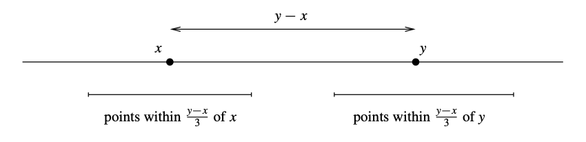
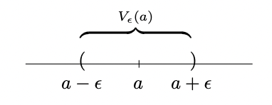
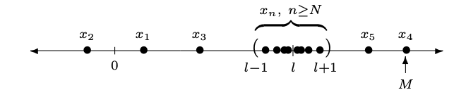
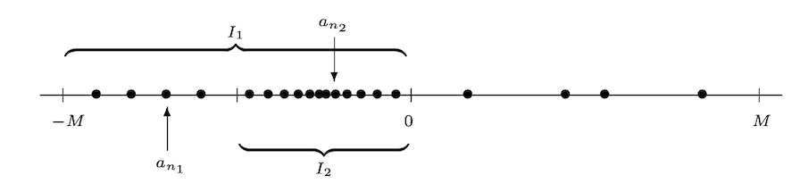
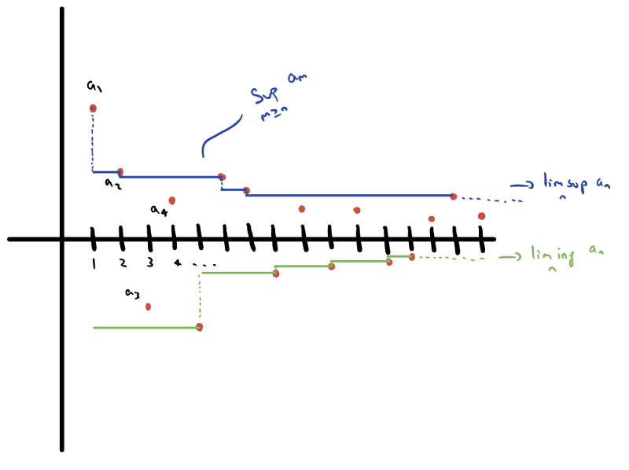

Chapter 3 Sequences#
A sequence of real numbers is a function \(f:\mathbb{N} \rightarrow \mathbb{R}\).
We will often write \(f(1) = a_{1}, f(2)= a_{2}\), and in general \(f(n) = a_{n}\). We usually identify the sequence with the ordered set of values of \(f\), which is written as \((a_{1}, a_{2}, a_{3}, \dots )\) or \(\{a_{1}, a_{2}, a_{3}, \dots\}\) or \((a_{n}, n \in \mathbb{n})\), or \((a_n)_{n\geq 1}\) or just simply \((a_{n})\).
Below are some examples of how a sequence might be given to you:
Example 4
\(\displaystyle \left(1,\frac12,\frac13,\frac14,\dots\right),\)
\(\displaystyle \left( \frac{n+1}{n}\right)_{n=1}^{\infty} = \left(2,\frac32,\frac43,\frac54,\dots\right),\)
\((a_n)_{n \in \mathbb{n}}\) (or \((a_n)_n\) or \(\{a_n\}_{n \in \mathbb{n}}\)), where \(a_n=2^n,\) for each \(n \in \mathbb{n},\)
\((x_n),\) where \(x_1=2\) and \(\displaystyle x_{n+1}=\frac{x_n+1}{2}.\)
It is very important to distinguish the sequence \((a_{n})\) from its \(n\)th term \(a_{n}\). On occasion, it will be more convenient to index a sequence beginning with \(n = 0\) or \(n = n_0\) for some natural number \(n_0\) different from \(1.\) These minor variations should cause no confusion. What is essential is that a sequence be an infinite list of real numbers. What happens at the beginning of such a list is of little importance in most cases. The business of Analysis is concerned with the behaviour of the infinite “tail” of a given sequence.
Sequences are important for a number of reasons. They are the simplest context in which we can study the notion of convergence, and they will play a vital role later when we study limits of functions, continuity, and infinite series.
We’ll kick things off by motivating and introducing the formal definition of convergence of a sequence, and then investigate some of its consequences.
3.1 Convergent sequences#
Our mission for a while has been to study the real numbers. When you were studying the integers (Semester 1 of MAS107), the main theme running through it all was to do with divisibility. Divisibility is, of course, not a very sensible thing to ask about over the reals.
As a result, Real Analysis (the study of \(\mathbb{R}\)), and the questions which are interesting and helpful to ask, is very different to Number Theory. It turns out that the most interesting things you can ask about are to do with approximation. Why is the notion of approximation so important?
Approximation and Convergence#
When we write
the point is that the digits give a kind of address telling you how to find \(\pi\) on the numberline. The number \(\pi\) is close to \(3\), closer to \(3.1\), closer still to \(3.14\), even closer still to \(3.141\), and so on.
The notion of convergence, which I’ll define shortly, is a way of encoding this concept of increasingly good approximation. We will say that the sequence of rational numbers
“converges to \(\pi\)”. That’s supposed to mean that if you follow the address, you’ll end up homing in on \(\pi\).
The definition will seem complicated, and probably harder to get your head around than other definitions in the course. However, that’s because it really is a subtle concept: all the simpler approaches you might think of are wrong.
Wrong approach 1#
The most obvious wrong definition is this:
Completely Wrong Definition 1
A sequence converges to \(l\) if it gets closer and closer to \(l\).
Why is this completely wrong? Well, for example, the sequence
Of course, this sequence never gets particularly close to \(1000\) (the sequence never goes above \(4\), so it never gets within \(996\) of \(\pi\)).
But this means that if our definition of “converging to \(l\)’’ were the completely wrong definition “gets closer and closer to \(l\)’’, then the sequence
would “converge to \(\pi\)’’, but it would also “converge to \(1000\)’’. But that’s not what we want: this sequence is a terrible way of getting to \(1000\), and an awesome way of getting to \(\pi\).
Wrong approach 2#
Here’s a slightly better idea:
Completely Wrong Definition 2
A sequence converges to \(x\) if it gets as close as you like to \(l\).
Before we understand why this is wrong, we ought to make sure we know what this is supposed to mean.
I like to think of it as an argument with a very dangerous and unpleasant evil opponent. The evil opponent gets to choose a (positive real) distance, and we win if the sequence gets within that distance of \(x\), and we lose if it doesn’t.
In order to be sure of winning, we have to know how to beat the evil opponent whatever they say.
So, in investigating how close the sequence
gets to \(1000\), then if the evil opponent is silly enough to ask “does the sequence get within distance \(100000\)?” we’ll win. But, being an evil genius, they probably won’t ask that. Instead they’ll ask “does the sequence get within distance \(0.001\) of \(1000\)?’’, and we’ll lose, because it never gets anywhere near there.
On the other hand, if we’re investigating how close the sequence gets to \(\pi\), we win no matter what they say. If they ask “does the sequence get within distance \(1000000\) of \(\pi\)?”, then we say “yes, \(3\) is within \(1000000\) of \(\pi\)’’, and win. If they ask “does the sequence get within distance \(0.0001\)” of \(\pi\), then we say “yes, \(3.14159\) is within \(0.0001\) of \(\pi\)’’, and win. If they ask a question with an even smaller positive number in (as small as they like), we just take more digits and use that and say “yes’’. We’re happy: the evil opponent will not beat us.
Formally, if we have a sequence
that gets very close to \(l\) in this sense, one could specify this concept as
In English this translates to “for every positive \(\epsilon\), there is a natural number \(n\) such that the n-th term of the sequence, \(a_n\) is within \(\epsilon\) of \(x.\) [1]”
In our minds, this says “no matter what \(\epsilon\) our evil opponent chooses, we can find some term \(a_n\) of the sequence such that \(a_n\) is within \(\epsilon\) of \(l\)”.
Why it’s wrong#
This is a much better attempt at the definition. But it’s still not right.
Here’s an example of what could go wrong. Consider the sequence
Does it converge to \(1\)? Does it converge to \(2\)?
It’s lousy as an address for either: if we give these instructions to the numberline’s village postal worker, they’ll get very annoyed as they keep walking from somewhere near \(1\) to somewhere near \(2\) and back again.
But according to the definition above it would “converge’’ to both, because it gets as close as you like to \(1\) and it also gets as close as you like to \(2\).
The right definition#
So we need to find some way of saying that it has to make its mind up eventually. The obvious thing to do is to say is that (for any \(\epsilon>0\)) it has to get within \(\epsilon\) of \(l\), and then stay within \(\epsilon\) of \(l\) forever.
This leads us to our final definition:
Definition 4
Let \(l\) be a real number. A sequence of real numbers \(a_0, a_1, a_2,\ldots\) is said to converge to \(l\) if we have
So that says “no matter what positive real \(\epsilon\) our evil opponent gives us, we can point out some \(N\), such that all the terms \(a_{N+1}, a_{N+2}, a_{N+3}, \ldots\) are all within \(\epsilon\) of \(x\)’’.
That does an excellent job of making precise the concept of “gets close and stays close forever’’, and it’s the right definition!
This definition is central to this module, and in Analysis and Mathematics in general. You need to learn it, and understand it, and be able to work with it, both in examples and in proofs.
Notation#
If \((a_{n})\) converges to \(l\), we write
\(\displaystyle \lim_{n \rightarrow \infty}a_{n} = l\), or
\(a_{n} \rightarrow l\) as \(n \rightarrow \infty\), or
\(a_{n} \stackrel{n \rightarrow \infty}{\longrightarrow} l\).
Let’s look at some examples, but keep it informal for the time being. These are not proofs!
Example 5
Now, suppose we ask whether the sequence
converges to \(\pi\). It looks like it does [2], because no matter what \(\epsilon\) our evil opponent asks about, we can find some term of the sequence beyond which all terms are within \(\epsilon\) of \(\pi\). For example, all terms after the \((N+1)\)st term are within \(10^{-N}\) of \(\pi\).
Does that converge to \(1000\)? No, it never comes within \(1\) of \(1000\) (for example), so it certainly doesn’t stay within \(1\) of \(1000\) forever.
Example 6
What about the sequence
Does that converge to anything?
It doesn’t look it converges (but again, unless we see a proper definition of the sequence, we are not in a position to affirm this). In particular, it doesn’t look liked it converges to \(1\), because while it’s sometimes close to \(1\), it’s also sometimes close to \(2\). So it appears that there is no \(N\) where \(a_n\) is always within \(0.1\) of \(1\) for all \(n>N\): all the odd-numbered \(a_n\) aren’t in that range.
Similarly, it doesn’t look like it converges to \(2\), because while it’s sometimes close to \(2\), it’s sometimes close to \(1\). So there appears to be no \(N\) where \(a_n\) is always within \(0.1\) of \(2\) for all \(n>N\): all the even-numbered \(a_n\) aren’t in that range.
More generally, suppose that we have a sequence \((a_{n})\), and we have good reason to believe that it converges and that its limit is the real number \(l\). How do we prove that \(l\) really is the limit? We need to understand more deeply what a limit really is. Although the terms of the sequence may never reach \(l\), we can require the distance between the terms and \(l\) to become arbitrarily small. Recall that for \(\epsilon>0\),
We want to say that as \(n\) gets very large, \(|a_{n}- l|\) gets very small. How small? As tiny a positive number as we like!
The smaller we require this distance to be, the further along the sequence we expect to have to go. Given a positive real number \(\varepsilon\), we want there to be a stage of the sequence beyond which all terms satisfy \(|a_{n}- l| < \varepsilon\).
How small do we take \(\varepsilon\)? How large do we take \(N\)? Suppose that I want to convince you that \((a_{n})\) converges to \(l\) and you are sceptical. You might say “what if I take \(\varepsilon = 0.001\), or \(0.00001\), or \(3.18 \times 10^{-700}\)?’’ To convince you, I have to show you that no matter how small an \(\varepsilon\) you give me, I can always find a stage \(N\) so that for all \(n > N, |a_{n}- l| < \varepsilon\).
So, given the difficulties we’ve had in finding the right definition, perhaps you’ll have some sympathy for the fact that it took about two centuries to sort Real Analysis out properly. In what remains of this section I’ll try to make you like this definition.
3.1.1. Convergence proofs#
Now we get back to the subject of convergence.
We say that a sequence \((a_i)_{i\in\mathbb{N}} = a_0, a_1, \ldots\) is convergent if it converges to some \(x\).
Here’s a very important fact (which is only true because of all that work we put in finding a good definition):
Proposition 3
A sequence \(a_0, a_1, \ldots\) cannot converge to two different real numbers \(x\) and \(y\).
Before we prove this, let’s think about what a proof might look like.
Here’s a picture of a numberline, to help show us what would happen if a sequence was convergent to \(x\) and to \(y\):
{kind=link}
The two bars at the bottom of that diagram were deliberately chosen not to overlap (I made each of them extend one third of the distance from \(x\) to \(y\), leaving another third of the distance between them in the middle).
And since it converges to \(x\) and \(y\), eventually all the terms of the sequence should be within the interval around \(x\), and also all of them within the interval around \(y\), which is a contradiction since the intervals don’t meet.
Let’s do the working carefully.
Proof. We’ll prove this by contradiction. So, suppose it can: suppose that there is a sequence \(a_0, a_1, \ldots\), which converges to two different real numbers \(x\) and \(y\). Without loss of generality, we may take \(x<y\).
Since the sequence \(a_0,a_1,\ldots\) converges to \(x\), there is some \(N\) such that, for all \(n>N\), we have \(\displaystyle \left|a_n - x\right|<\frac{y-x}{3}\). (Why?!)
Since the sequence \(a_0,a_1,\ldots\) converges to \(y\), there is some \(M\) such that, for all \(n>M\), we have \(\displaystyle \left|a_n - y\right|<\frac{y-x}{3}\). (Why?!)
But then, using the triangle inequality, for any \(n\) bigger than both \(N\) and \(M\), we have
which is a contradiction as \(y-x\) is positive.
Remark 4
If a sequence is convergent, there is a unique real number to which it converges; we call that the limit of the sequence.
\(\ldots\) and a warning
I know that you have met the subject of convergence in MAS106.
That course is about…streetfighting, and there you’re encouraged to use any techniques you have to hand without worrying too much about what it means.
MAS107 on the other hand, is a course about proof in mathematics, and tracing reasoning back to basic principles. When I set problems about convergence in MAS107, I need you to give a rigorous proof, with everything traced back to the definition of convergence (unless you’re told otherwise), rather than using the slightly vaguer methods and extra theorems you saw there!
Proof. Proof take two.
Assume for contradiction that \(a_n\) converges to two different real numbers, \(x\) and \(y.\)
Let \(\epsilon >0\). Since \(a_n \to x\), there is an \(N_1 \in \mathbb{N}\) such that \(\displaystyle |a_n - x| = |x-a_n| <\frac{\epsilon}{2}.\) Since \(a_n \to y\), there is an \(N_2 \in \mathbb{N}\) such that \(\displaystyle |a_n - y| < \frac{\epsilon}{2}.\)
Now, using the triangle inequality with any \(a_n\) such that the corresponding index \(n\) is \(n > \max\{N_1,N_2\}\):
But as \(\epsilon >0\) was arbitrary. Theorem 1 asserts that \(x=y.\)
Is it really different from what we wrote above?
No, not really. In both cases we assumed for contradiction that there are two different limits \(x\) and \(y.\) In the first proof, we exploited the guarantee (from the definition of convergence) that we could get as close as we like to both \(x\) and \(y\) (provided we go far along the sequence), and then we picked a specific \(\epsilon >0\) (=degree of closeness) to get a contradiction. In the second case, we actually used exactly the same argument with a small twist: instead of picking a special \(\epsilon >0\) that would lead to a contradiction, we argued that given an arbitrary one, we can bound the difference \(|x-y|\) by any \(\epsilon >0\) (this is because the same argument works no matter what \(\epsilon >0\) we are given). We have already seen that this immediately implies \(x=y\) which is of course a contradiction to our original assumption. Notice however the following subtle point: in the first proof, when I gave you \(\displaystyle \epsilon':=\frac{y-x}{3}\), the definition of convergence gave us \(\displaystyle N_1=N_1\left(\frac{y-x}{3}\right)\) and \(\displaystyle N_2=N_2\left(\frac{y-x}{3}\right).\) In the second proof, the argument implied that for any \(\epsilon >0\) we are given we will find \(N_1 = N_1(\epsilon), N_2 = N_2(\epsilon).\) The moment you fix\(\epsilon >0\), \(N_1\) and \(N_2\) get fixed, and I can simply select an index \(n\) bigger than both of them. And again, there is nothing worrying about that: by the definition of convergence, we can always find such \(N_1,N_2\) no matter how the \(\epsilon >0\) is picked. This is really the meaning of the phrase “I can get as close to the limit -and stay close- provided I go far enough into the sequence”. The “\(\epsilon >0\) “-part quantifies the degree of closeness, and the “\(N \in \mathbb{N}\)”-part, dictated by the choice of \(\epsilon >0\), is a quantification of “provided I go far enough into the sequence” (or its indices, if we want to be more precise).
Before we move off to more examples, here’s how I would have written the above proof.
Let’s now try proving that some sequence or other does converge, as we’re not well practised at that yet:
Proposition 4
The sequence
where \(\displaystyle a_n = \frac{n-1}{n}\), converges to \(1\)
Proof. rough version The definition of convergence is complicated, so it may be helpful to start by reminding ourselves what we’re aiming for. So we’ll start by working from the wrong end.
We need to show that, for every \(\epsilon>0\), there is some \(N\), such that for all \(n>N\) we have
A natural thing to do is to simplify that:
So, as we can see, what we’re aiming for is that, for every \(\epsilon>0\) there is some \(N\), such that for all \(n>N\) we have
But that’s the same as having
So if we take \(N\) to be \(\left\lceil\frac{1}{\epsilon}\right\rceil\), the smallest integer greater than \(1/\epsilon\), that works.
A better proof#
That proof is sort-of-okay, but it’s backwards. It was helpful to write it, but hard to check that it’s logically valid. I’ll now rewrite it forwards.
Proof. Proof (neat version)
We must show that, for every \(\epsilon>0\), there is some \(N\) such that for all \(n>N\) we have
Let such an \(\epsilon\) be given.
Define \(N\) to be \(\left\lceil\frac{1}{\epsilon}\right\rceil\), which is the smallest integer greater than \(1/\epsilon\).
Then, if \(n>N\), we have
exactly as required.
A comment \(\ldots\)
That second version is obviously correct, and all the reasoning goes in the right direction. But Analysis proofs often have the property that the most persuasive proof will seem a bit mysterious. It’s best to do the rough work first, and then rewrite it neatly.
Before we look at more examples some important comments are in order.
Quantifiers#
The definition of convergence given earlier is the result of hundreds of years of refining the intuitive notion of limit into a mathematically rigorous statement. The logic involved is complicated and is intimately tied to the use of the quantifiers “for all” and “there exists.” Learning to write a grammatically correct convergence proof goes hand in hand with a deep understanding of why the quantifiers appear in the order that they do.
Remark 5 (The definition begins with the phrase,)
“For all \(\epsilon>0\) , there exists \(N \in \mathbb{N}\) such that…”
Looking back at our first example, we see that our formal proof begins with, “Let \(\epsilon>0\) be an arbitrary positive number.” This is followed by a “construction”selection of \(N\) and then a demonstration that this choice of \(N\) has the desired property. This, in fact, is a basic outline for how every convergence proof should be presented.
Template for a proof that \(a_n \to a\)#
“Let \(\epsilon>0\) be arbitrary.’’
Demonstrate a choice for \(N \in \mathbb{N}\). This step usually requires the most work, almost all of which is done prior to actually writing the formal proof.
Now, show that this \(N\) actually works.
Assume \(n \geq N.\)
With \(N\) well chosen, it should be possible to derive the inequality \(|a_n - a| < \epsilon.\)
Let’s do another example:
Proposition 5
The sequence defined by \(\displaystyle a_n = \frac{3^{n+1}}{3^n+1}\) converges to \(3\).
Proof. Rough version
We need to show that, for all \(\epsilon>0\), there exists some \(N \in \mathbb{N}\) such that, for all \(n>N\), we have
We can simplify the left-hand-side considerably:
So we need to show that, for all \(\epsilon>0\), there exists some \(N \in \mathbb{N}\) such that, for all \(n>N\), we have
We can rearrange this to
Hence if we take \(N= \lceil \log_3(3/\epsilon-1) \rceil\), the smallest integer greater than \(\log_3(3/\epsilon-1),\) this will work.
As before, here’s a shorter, more persuasive but less insightful version of the same material:
Proof. Neat Version
We need to show that, for all \(\epsilon>0\), there exists some \(N \in \mathbb{N}\) such that, for all \(n>N\), we have
Suppose we are given some \(\epsilon>0\) ; we’ll show that \(N = \lceil \log_3(3/\epsilon-1) \rceil\) works.
Indeed, we have
exactly as required.
The next example is the first instance of the promised application of the Archimedean property, Theorem 9, to the convergence of certain sequences.
Example 7
Show [3] that \(\displaystyle a_n=\frac{1}{n} \to 0.\)
Proof. Let \(\epsilon>0\) be arbitrary. We need to show that eventually (i.e., after some \(N\) that will depend on the given \(\epsilon>0\)), the sequence is always within \(\epsilon\) of \(0,\) i.e., that eventually we have \(\displaystyle \left | \frac{1}{n} \ \right| < \epsilon.\)
By the Archimedean property, \(\mathbb{N}\) has no upper bound. In particular, \(\displaystyle \frac{1}{\epsilon}\) is not an upper bound for \(\mathbb{N}.\) So we can always find \(N \in \mathbb{N}\) with \(\displaystyle N > \frac{1}{\epsilon}.\) Hence, for every \(n>N,\) we have
which shows that \(\displaystyle \frac{1}{n} \to 0.\)
Let’s look at one more example [4]. This is yet another instance where the Archimedean property comes in handy, but it is also evidence to back up an earlier claim about how useful certain inequalities can be.
Example 8
Prove that \(\displaystyle \lim_{n \rightarrow \infty}r^{n} = 0,\) whenever \(0 \leq r < 1\).
Proof. The result is obvious when \(r = 0\), so assume \(r > 0\). Since \(r < 1\), we have \(1/r > 1\) so we can write \(1/r = 1 + h\), where \(h > 0\). Now use Bernoulli’s inequality (see the Appendix to Chapter 2) to write
Hence \(r^{n} \leq (1 + nh)^{-1}\).
To obtain the required result we need to show that given \(\epsilon>0\), there exists \(N \in \mathbb{N}\) so that \(n > N \Rightarrow |r^n-0|= r^{n} < \varepsilon\).
Now we need to do some algebra.
To find \(N\) such that \((1 + Nh)^{-1} < \varepsilon\) will do the trick. Check that this requires that \(N > \displaystyle\frac{1-\varepsilon}{h\varepsilon}\). The Archimedean property tells us that such an \(N\) exists.
Then for all \(n > N\),
as required.
3.1.2 Convergence - a topological take#
There is no denying that the definition of convergence is complicated, and so is its application to concrete sequences. It is sometimes convenient and more instructive to have a more geometric/visual impression of what the definition describes. In particular, in what follows we will focus on the ending phrase “\(|a_n - a| < \epsilon,\)” and think about the points that satisfy an inequality of this type.
Definition 5
Given real numbers \(a\) and \( \epsilon >0\) , the set
is called an \(\epsilon\)-neighbourhood of \(a\).
Parsing the definition simply implies that \(V_{\epsilon}(a)\) is the set of all the points whose distance from \(a\) is less than \(\epsilon.\) In other words, \(V_{\epsilon}(a)\) is an interval with \(a\) as its centre, and radius (aka distance to the left/right endpoints) \(\epsilon.\)
{kind=link}
Now let’s rewrite the definition of convergence in terms of \(\epsilon\)-neighbourhoods.
Definition 6
A sequence \(a_n\) converges to \(a\) if, given any \(\epsilon\)-neighbourhood \(V_{\epsilon}(a)\)of \(a\), there exists a point in the sequence after which all of the terms are in \(V_{\epsilon}(a)\). In other words, every \(\epsilon\)-neighbourhood contains all but a finite number of the terms of \((a_n)\).
{kind=link}
Definition 4 and Definition 6 say exactly the same thing: the natural number \(N\) in the original version of the definition marks the point where the sequence \((a_n)\) enters \(V_{\epsilon}(a)\), never to leave again. It should be apparent that the value of \(N\) depends on the choice of \(\epsilon>0\) as we have already discussed. The smaller the \(\epsilon\)-neighbourhood, the larger \(N\) may have to be.
Example 9
Consider the sequence \((a_n),\) where \(\displaystyle a_n = \frac{1}{\sqrt{n}}.\)
Our intuitive understanding of limits points confidently to the conclusion that
Before trying to prove this, not too impressive, fact, let’s first explore the relationship between \(\epsilon>0\) and \(N\) in the definition of convergence. For the moment, let our evil opponent test us with the \(\epsilon>0\) being \(1/10.\) This defines a sort of “target zone” for the terms in the sequence. By claiming that the limit of \((a_n)\) is \(0,\) we are saying that the terms in this sequence eventually get arbitrarily close to \(0.\) How close? What do we mean by “eventually”? We have set \(\epsilon = 1/10\) as our standard for closeness, which leads to the \(\epsilon\)-neighbourhood \((-1/10, 1/10)\) centered around the limit \(0.\) How far out into the sequence must we look before the terms fall into this interval? The 100th term \(a_{100} = 1/10\) puts us right on the boundary, and a little thought reveals that if
then
Thus, for \(\epsilon = 1/10\) we choose \(N=101\) (or anything larger) and we are guaranteed to be in \(V_{1/10}(0)\) and never leave.
Now, the opponent’s choice of \(\epsilon = 1/10\) was rather whimsical, but we can do this again, if, say, we are challenged with \(\epsilon=1/50.\) In this case, our target neighbourhood shrinks to \((-1/50, 1/50)\) and it is apparent that we must travel farther out into the sequence before \((a_n)\) falls into this interval. How far? Essentially, we require that
which will be guaranteed as long as
I.e., \(N = 2501\) is a suitable response to the challenge \(\epsilon=1/50,\) i.e, as soon as we hit index number \(2501\) we enter \(V_{1/50}(0)\) and never leave.
It may seem that this duel could continue forever, with different \(\epsilon>0\) challenges being handed to us one after another, each one requiring a suitable value of \(N\) in response. In a sense, this is correct, except that the game is effectively over the instant we recognize a rule for how to choose \(N\) given an arbitrary \(\epsilon >0 \) For this problem, the desired algorithm is implicit in the algebra carried out to compute the previous response of \(N = 2501.\) Whatever \(\epsilon>0\) happens to be, we want
which is equivalent to insisting that
We are now ready to rigorously prove the claim that \(\displaystyle a_n \to 0.\)
Proof. Let \(\epsilon>0\) be given. Choose \(N \in \mathbb{N}\) such that \(\displaystyle N> \frac{1}{\epsilon^2}.\) Let \(n \geq N.\) Then
implies
and therefore \(|a_n - 0| < \epsilon.\)
Divergence#
Significant insight into the role of the quantifiers in the definition of convergence can be gained by studying an example of a sequence that does not have a limit.
Example 10 (Consider the sequence)
How can we argue that this sequence does not converge to, say, \(0\)? Looking at the first few terms, it seems that the initial evidence would actually support such a conclusion. Enter the evil genius of our opponent and the game begins.
Given a challenge of \(\epsilon = 1/2,\) a little reflection reveals that after \(N = 3\) all the terms fall into the neighbourhood \((-1/2, 1/2).\) We could also handle \(\epsilon = 1/4.\) (What is the smallest possible \(N\) in this case?)
But the definition of convergence says “For all\( \epsilon >0\) ” and it should be apparent that there is no response to a choice of \(\epsilon = 1/10,\) for instance. You won this round, evil opponent!
Seriously though, this leads us to an important observation about the logical negation of the definition of convergence of a sequence. To prove that a particular number \(x\) is not the limit of a sequence \((x_n)\), it suffices to produce a single value of\( \epsilon >0\) for which no \(n \in \mathbb{N}\) works.
More generally speaking, the negation of a statement that begins with “For
all P, there exists Q,…” is the statement, “For at least one P, no Q is possible…”
For instance, how could we disprove the preposterous claim that “At every university in the UK, there is a student who is at least seven feet tall”?
We have argued that the preceding sequence does not converge to \(0.\) Let’s argue against the claim that it converges to \(1/5.\) Choosing \(\epsilon = 1/10\) produces the neighbourhood \((1/10, 3/10).\) Although the sequence continually revisits this neighbourhood, there is no point at which it enters and never leaves as the definition requires. Thus, no \(n \in \mathbb{N}\) works for \(\epsilon = 1/10,\) so the sequence does not converge to \(1/5.\) Of course, this sequence does not converge to any other real number, and it would be more satisfying to simply say that this sequence does not converge.
Definition 7
A sequence that does not converge is said to diverge.
Divergent sequences may display different types of behaviour. For example, a sequence \((a_{n})\) is said to diverge to \(\infty\) (respectively, diverge to \(-\infty\)), if given any \(K > 0\), there exists \(n \in \mathbb{N}\) so that for all \(n > N,\) we have that \(a_{n} > K\) (respectively, \(a_{n} < -K\)). In this case, we may write
A divergent sequence may also oscillate between different values, for example, the sequence \(\{(-1)^{n})\}\) takes only two values,\(+1\) and \(-1\).
Although it is not too difficult, we will postpone arguing for divergence in general until we develop an easier-for-applications divergence criterion. Soon enough.
3.2 Some more systematic methods#
The examples in the previous subsection seem like a lot of work. In fact, they are a lot of work: the definition of convergence is genuinely complicated, so it’s no surprise that it takes time when you have to use it.
However, Real Analysts know many situations that crop up repeatedly, and know many useful facts for saving them time in those situations. The real purpose of creating a rigorous definition for convergence of a sequence is not to have a tool to verify computational statements such as \(\displaystyle \frac{n}{n+1} \to 1.\)
The point of having such a logically tight description of convergence is so that we can confidently state and prove statements about convergence of sequences in general. We are ultimately trying to resolve arguments about what is and what is not true regarding the behaviour of limits with respect to the mathematical manipulations we intend to inflict on them.
We will soon develop a library of results about the limits of sums/differences/products/ quotients of sequences etc, but let us first look at an important property every convergence sequence has. To understand this property we will need the following definition:
Definition 8
A sequence \((a_{n})\) is said to be bounded above (respectively, bounded below, bounded) if the set \(\{a_{n} : n \in \mathbb{N}\}\) is bounded above (respectively, bounded below, bounded). We will say that the sequence is bounded if it is both bounded above and bounded below.
Symbolically:#
A sequence \((x_{n})\) is bounded above if and only if there is a number \(A\in \mathbb{R}\) such that \(a_n \leq A\) for all \(n \in \mathbb{N}.\)
A sequence \((x_{n})\) is *bounded below if and only if there is a number \(B\in \mathbb{R}\) such that \( B \leq a_n \) for all \(n \in \mathbb{N}.\)
A sequence \((x_{n})\) is bounded if and only if there are numbers \(U,L \in \mathbb{R}\) such that \( L \leq x_n \leq U\) for all \(n \in \mathbb{N}.\)
Please note: we often say that a sequence \((x_{n})\) is bounded if and only if there is a number \(M \in \mathbb{R}\) such that \(|x_n| \leq M.\) (Question for you: how does this compare with the above definition?) Geometrically, this means that we can find an interval \([-M,M]\) that contains every term in the sequence \(\{x_n\}.\)
For example \(\{1/n\}\) and \(\{(-1)^{n}\}\) are both bounded.
We can now make sense of the next result:
Theorem 13
If a sequence \((x_{n})\) is convergent, then it is bounded.
Proof. The result asserts that any sequence that complies with the definition of “convergent”, will also satisfy the requirements of the definition of “bounded”.
To show that the sequence is bounded we need to find \(M > 0\) such that \(|x_{n}| \leq M\) for all \(n \in \mathbb{N}\).
We know \((x_{n})\) converges to some \(l \in \mathbb{R}\), so given any \(\varepsilon > 0\) there exists \(n \in \mathbb{N}\) such that if \(n > N\), then \(|x_{n}-l| < \varepsilon\).
By the triangle inequality, if \(n > N,\)
So \(\varepsilon + |l|\) is a bound, once we are past stage \(N\).
\( \varepsilon\) is fixed, but just to be extra clear about this, let’s take \( \varepsilon = 1\) (which means that the \(N\) we found corresponds to the one dictated by this \( \varepsilon\)) [5].
With this comment, what we have shown so far is that \( |x_{n}| < 1 + |l|,\) for all \(n > N,\) with \(N=N( \varepsilon=1).\)
We need a bound \(M\) that works for all \(n \in \mathbb{N}\), so now suppose that \(n \leq N\).
{kind=link}
We then have
If we combine together the two pieces of our argument we see that we can set
and then \(|x_{n}| \leq M\) for all \(n \in \mathbb{N}\), as required.
The converse to Theorem 13 is not true; for a counterexample, consider the sequence whose \(n\)th term is \((-1)^{n}\); it is bounded, but not convergent.
Theorem 13 provides a necessary condition for convergence. It asserts that every sequence that is convergent will also have to be bounded. We can exploit this to show that certain sequences do not converge, i.e., as a divergence criterion. For example the sequence \(x_n=n, n \in \mathbb{N}\) does not converge. If it was convergent, by Theorem 13 it would be bounded, which it clearly isn’t [6].
3.2.1 Algebra of Limits#
The theorems in this section illustrate that sequences behave extremely well with respect to the operations of addition, multiplication, division, and order.
Consider the sequence whose \(n\)th term is \(\displaystyle a_{n} = \frac{2n + 3n^{2}}{n^{2} +4}\). If you do some numerical experiments, you might conjecture that the limit is \(3\). How would we prove this? Divide every term in the numerator and denominator of the fraction by the highest power of \(n\) that occurs. This is \(n^{2}\) and we get:
Now we know that \(\displaystyle \lim_{n \rightarrow \infty}\frac{1}{n} = 0, \lim_{n \rightarrow \infty}3 = 3, \lim_{n \rightarrow \infty}1 = 1\) and \(\displaystyle \lim_{n \rightarrow \infty}2 = 2\). We could indeed argue that \(\displaystyle \lim_{n \rightarrow \infty}a_{n} = 3\) if we could justify writing
It turns out that this sort of reasoning is indeed justified, and the general result that we need is given in the next theorem – this is often known as the Algebra of Limits (AOL).
Theorem 14 (The Algebra of Limits)
Suppose that \((a_{n})\) and \((b_{n})\) are convergent sequences with \(\displaystyle \lim_{n \to \infty} a_{n} = l\) and \( \displaystyle \lim_{n \to \infty} b_{n} = m\). Then:
If \(c\) is any real number then the sequence whose \(n\)th term is \(ca_{n}\) converges to \(cl\). We write
The sequence whose \(n\)th term is \(a_{n} + b_{n}\) converges to \(l + m\). We write
The sequence whose \(n\)th term is \(a_{n}b_{n}\) converges to \(lm\). We write
If \(b_{n} \neq 0\) for all \(n\) and also \(m \neq 0\) then the sequence whose \(n\)th term is \(\displaystyle\frac{a_{n}}{b_{n}}\) converges to \(\displaystyle\frac{l}{m}\). We write
Proof. 1. Consider the case where \(\displaystyle c \neq 0.\) We want to show that the sequence \((ca_n)\) converges to \(cl,\) so the structure of the proof follows the template we gave earlier for convergence proofs.
Let\( \epsilon >0\) be given. We want to find some index \(N\) such that after that point, we will have that
Of course,
As \(a_n \to l,\) we can make \(\displaystyle |a_n - l|\) as small as we like. In particular, we can find an \(n \in \mathbb{N}\) such that
Notice that this is where we used the assumption that \(c \neq 0.\)
This \(n \in \mathbb{N}\) indeed works for the sequence \((ca_n)\) as, for all \(n \geq N,\)
The case \(c=0\) is quite easy and it’s left to you as an exercise.
Before continuing with parts (2), (3), and (4), we should point out that the approach in (1) is extremely typical for a convergence proof. As already mentioned before, before embarking on a formal argument, it is a good idea to take an inventory of what we want to make less than \(\epsilon\) and what we are given can be made small for suitable choices of \(n\) (again, provided -if necessary- that we go far along in our sequence). For the previous proof, we wanted to make \( |ca_n - cl| < \epsilon\), and we were given that \(|a_n - l| < \text{(anything we like)}\) (for large values of \(n\) quantified by a specific choice of \(n \in \mathbb{N}\)). Notice that in (1), and all of the ensuing arguments, the strategy each time is to bound the quantity we want to be less than \(\epsilon,\) which in each case is
with some algebraic combination of quantities over which we have control.
We need to argue that the quantity
can be made as small as we like, for large \(n\), i.e., that eventually it can be made smaller than an arbitrary\( \epsilon >0\) . Of course we need to exploit our knowledge of the limits of both \(a_n\) and \(b_n\), which is made more apparent by, artificially grouping the related terms in the above expression, as
We’ve done something similar before, so you may already see where this is going: we will use the triangle inequality to “separate” the expressions \(\displaystyle |a_n - l|, |b_n - m|,\) and then show that each of them can be made, eventually, as small as we like.
By the convergence assumption on \(a_n\) and \(b_n\), given any \(\varepsilon > 0\), there exists \(N_1 \in \mathbb{N} \) such that if \(n > N_1\), then \(\displaystyle |a_{n} - l| < \frac{\varepsilon}{2}\), and there also exists \(N_2 \in \mathbb{N}\) such that if \(n > N_2\), then \(\displaystyle |b_{n} - m| < \frac{\varepsilon}{2}\).
The question now arises as to which of \(N_1\) or \(N_2\) we should take to be our choice of \(N\). Choosing \(N:= \max\{N_1,N_2\}\), for any \(n >N,\) applying the triangle inequality we see that
Here we’ll use the triangle inequality in a familiar way - but we’ll also need to appeal to Theorem 13 First we have
In the initial step, we subtracted and then added \(lb_n\), which created an opportunity to use the triangle inequality. Essentially, we have broken up the distance from \(a_nb_n\) to \(lm\) with a midway point and are using the sum of the two distances to overestimate (=bound from above) the original distance. This clever trick will become a familiar technique in arguments to come.
At this stage we’ll assume that \(l \neq 0\) and worry about what happens when \(l = 0\) later on. Now the sequence \((b_{n})\) is convergent and so by Theorem 13 it is bounded. Hence there exists a real number \(K > 0\) such that \(|b_{n}| \leq K\) for all \(n\). So we can go back to (*) and write
For any \(\varepsilon > 0\), there exists \(n \in \mathbb{N}\) such that if \(n > N, |a_{n} - l| < \displaystyle\frac{\varepsilon}{2K}\), and there exists \(M \in \mathbb{N}\) such that if \(n > M\), \(|b_{n} -m| < \displaystyle\frac{\varepsilon}{2|l|}\). From (**) we then get for \(n > \max\{M, N\}\),
That proves the theorem in the case where \(l \neq 0\). If \(l = 0\) then just go back to (*) and use the fact that given \( \varepsilon > 0\) there exists \(P \in \mathbb{N}\) such that if \(n > P, |a_{n}| < \displaystyle\frac{\varepsilon}{K}\).
First we’ll show that \(\displaystyle \lim_{n \to \infty} \displaystyle\frac{1}{b_{n}} = \displaystyle\frac{1}{m}\). Consider
For large enough \(n\) we can make \(|b_{n} -m|\) as small as we like and \(\displaystyle \frac{1}{|m|}\) is constant, and as such presents no problems. The problem term in (\({\dagger}\)) is \(\displaystyle\frac{1}{|b_{n}|}\) so let’s focus on that. To deal with this we’ll need to be clever and we’ll work with \(\varepsilon\) satisfying \(\displaystyle \varepsilon < \displaystyle\frac{|m|}{2}\).
As we continue the argument you’ll see why this is a good idea. (This is not cheating: we have to show a condition for all \( \epsilon >0\) , but once we show it for all\( \epsilon >0\) smaller than \(\displaystyle\frac{|m|}{2}\), it clearly also holds for larger \(\epsilon >0\) .) Given such an \(\varepsilon\) we can as usual find \(n \in \mathbb{N}\) such that if \(n > N\) then
By Theorem 12, we have
and so, \(|b_{n}| > \displaystyle\frac{|m|}{2}\). Hence \(\displaystyle\frac{1}{|b_{n}|} < \frac{2}{|m|}.\)
We can then use the same argument as in the proof of Theorem 13 to see that the sequence whose \(n\)th term is \(\displaystyle\frac{1}{|b_{n}|}\) is bounded by
Now let’s return to (\({\dagger}\)). With \(\varepsilon\) as above, we see that for \(n > N\) we have
and that will suffice to establish that \(\displaystyle \lim_{n \to \infty} \displaystyle\frac{1}{b_{n}} = \displaystyle\frac{1}{m}\).
Finally to show the general result claimed in the theorem we just write
and use part (3).
Notice that we could write the statement of part (i) of the theorem as
with the slogan “the limit of a sum is the sum of the limits’’, as long as we are careful to remember that all of the limits have to exist for this to make sense. Similar remarks apply to the other parts.
Now that we’ve proved Theorem 14 you should go back to the sequence we considered at the beginning of the section, and convince yourself that every step can be justified to prove that the limit is \(3\).
Example 11
Find \(\displaystyle\lim_{n \rightarrow \infty} \frac{2n - 7n^{3}}{6n^{2} + 11n^{3}}\).
Solution
The trick in problems like this is to divide top and bottom by the highest power of \(n\) (in this case \(n^{3}\)), and then use the algebra of limits systematically:
Limits and Order#
The (AOL) Theorem 14 verifies that the relationship between algebraic combinations of sequences and the limiting process is as trouble-free as we could hope for. Limits can be computed from the individual component sequences provided that each component limit exists. The limiting process is also well-behaved with respect to the order operation, as recorded in the following theorem.
Theorem 15
Suppose that \((a_{n})\) and \((b_{n})\) are convergent sequences with \(\displaystyle \lim_{n \to \infty} a_{n} = l\) and \(\displaystyle \lim_{n \to \infty} b_{n} = m\). Then:
:label: closedseq If \(a_n \geq 0,\) for all \(n \in \mathbb{N}\), then \(l \geq 0.\)
If \(a_n \leq b_n\) for all \(n \in \mathbb{N}\), then \(l \leq m.\)
If there exists \(c\in \mathbb{R}\) for which \(c \leq b_n\) for all \(n \in \mathbb{N},\) then \(c\leq m.\) Similarly, if \(a_n \leq c,\) for all \(n \in \mathbb{N},\) then \(l \leq c.\)
Proof. 1. Suppose that the limit \(l<0\) and let \(\displaystyle \epsilon=\frac{-l}{2}>0\) (because we can!). By the convergence assumption, there exists \(N \in \mathbb{N}\) such that \(|a_n-l|<\epsilon\) for all \(n > N\). For \(n > N\),
and so
a contradiction to our assumption about \((a_n)_n.\) Therefore \(l \geqslant 0\). In other words, if each \(a_n\in [0,\infty),\) then \(l \in [0,\infty)\).
Since \(a_n \leq b_n\) for all \(n \in \mathbb{N},\) defining \(y_n:=b_n -a_n,\) we have that the terms of the new sequence \((y_n)_n\) satisfy \(y_n \geq 0,\) for all \(n \in \mathbb{N}.\) Therefore by the previous result, the limit of \(y_n\), if it exists, should also be non-negative. By (AOL),\(\displaystyle \lim_{n \to \infty} y_n = m-l,\) so \(m-l \geq 0 \Leftrightarrow l\leq m.\)
Very similar idea to the last proof: define (yes, completely artificially but why not?) the new sequence \(d_n:=c\) for all \(n \in \mathbb{N}.\) Then, a simple application of part (ii) yields the result. Argue similarly for the case of a bounded above sequence.
A word about the idea of “tails” is in order. Loosely speaking, limits and their properties do not depend at all on what happens at the beginning of the sequence but are strictly determined by what happens when \(n\) gets large. Changing the value of the first ten -or ten thousand- terms in a particular sequence has no effect on the limit. Theorem 15, part (1), for instance, assumes that \(a_n \geq 0\) for all \(n \in \mathbb{N}.\) However, the hypothesis could be weakened by assuming only that there exists some point \(N_1\) where \(a_n \geq 0\) for all \(n \geq N_1.\) The theorem remains true, and in fact the same proof is valid with the provision that when \(N\) is chosen it be at least as large as \(N_1.\)
In the language of Analysis, when a property (such as non-negativity) is not necessarily true about some finite number of initial terms but is true for all terms in the sequence after some point \(N,\) we say that the sequence eventually has this property. Theorem 15, part (1), could be then restated as “Convergent sequences that are eventually nonnegative converge to nonnegative limits.” Parts (2) and (3) have similar modifica-tions, as will many other upcoming results. You will be asked to appropriately modify some of the above results to obtain their eventual analogues; more of that in the tutorials.
3.2.3 Squeeze Theorem#
Another very useful result for finding limits is the Sandwich Rule, sometimes referred to as the Squeeze Theorem.
Theorem 16 (Sandwich Rule (Squeeze Theorem) )
Suppose we are given three sequences \((a_{n}), (b_{n})\) and \((c_{n})\), such that for all \(n \in \mathbb{N}\) we have
If \((a_{n})\) and \((c_{n})\) both converge to the same limit \(l\), then \((b_{n})\) also converges to \(l\).
Proof. We have to show that given any \(\epsilon>0\), there exists \(n \in \mathbb{N}\) such that for all \(n > N, |b_{n} - l| < \varepsilon\), i.e. both \(b_{n} - l < \varepsilon\) and \(l - b_{n} < \varepsilon\).
But there exists \(M_{1} \in \mathbb{N}\) such that for all \(n > M_{1}\),
and, similarly, there exists \(M_{2} \in \mathbb{N}\) such that for all \(n > M_{2}\),
The result follows by taking \(N = \max\{M_{1}, M_{2}\}\).
A very common application of the Squeeze Theorem is in computing limits of sequences where the numerator involves \(\sin(x)\) or \(\cos(x).\) In such arguments we exploit that \(\displaystyle |\cos(x)|,|\sin(x)| \leq 1,\) i.e.,
Example 12
Find \(\displaystyle \lim_{n \rightarrow \infty} \displaystyle\frac{\cos(n)}{n}.\)
Solution
For all \(n \in \mathbb{N}\), we have \(- 1 \leq \cos(n) \leq 1\), and so
Since \(\displaystyle \lim_{n \rightarrow \infty} \frac{1}{n} = 0\), by (AOL), Theorem 14, also \(\displaystyle \lim_{n \rightarrow \infty} -\frac{1}{n} = -0=0\) and then by the Sandwich Rule, we have \(\displaystyle \lim_{n \rightarrow \infty} \displaystyle\frac{\cos(n)}{n} = 0.\)
3.3 Bounded monotonic sequences#
We showed in Theorem 13 that convergent sequences are bounded. The converse statement is certainly not true. It is not too difficult to produce an example of a bounded sequence that does not converge. On the other hand, if a bounded sequence is monotone, then in fact it does converge. In this section, we study this important class of sequences.
Definition 9
A sequence \((a_{n})\) is monotonically increasing if \(a_{n+1} \geq a_{n}\) for all \(n \in \mathbb{N}\), and it is monotonically decreasing if \(a_{n+1} \leq a_{n}\) for all \(n \in \mathbb{N}\).
It is strictly increasing if \(a_{n+1} >a_n\) for all \(n \in \mathbb{N}\), and it is strictly decreasing if \(a_{n+1} <a_n\) for all \(n \in \mathbb{N}\).
Finally, we say that a sequence is monotone if it is either monotonically increasing or decreasing.
An example of a monotonically decreasing sequence is \(\displaystyle a_{n} = \frac{1}{n}\) while \(\displaystyle a_{n} = 1 - \frac{1}{n}\) is monotonic increasing.
By the way, it is easy to see that \((a_{n})\) is monotonically increasing if and only if \((-a_{n})\) is monotonically decreasing.
Now it certainly isn’t true that every monotone sequence converges; for a counter-example, think of \(a_{n} = n\). But suppose a sequence is both monotone increasing and bounded above. Then on the one hand we are told that our sequence is steadily increasing in value, but on the other hand, we have imposed a ceiling on it that it cannot exceed. So where can it go to except to the ceiling? The next result puts this intuition into precise mathematical form. Just to remind you that you have already encountered (and used) the forthcoming theorem in Semester 1 of MAS106 (but of course the tools to prove it were missing at the time).
Theorem 17 (Monotone Convergence Theorem)
If the sequence \((a_{n})_n\) is bounded above and monotone increasing, then it is convergent and \(\displaystyle \lim_{n \rightarrow \infty} a_{n} = \sup_{n \in \mathbb{N}}(a_{n})\).
If the sequence \((a_{n})\) is bounded below and monotone decreasing, then it is convergent and \(\displaystyle \lim_{n \rightarrow \infty} a_{n} = \inf_{n \in \mathbb{N}}(a_{n})\).
Proof. 1. Since \((a_{n})\) is bounded above, \(\displaystyle \alpha = \sup_{n \in \mathbb{N}}(a_{n})\) exists by the completeness property [7]. By Lemma 1, given any \(\varepsilon > 0\) there exists \(n \in \mathbb{N}\) such that \(a_{N} > \alpha - \varepsilon\).
But \((a_{n})\) is monotonic increasing, so for all \(n > N\) we have
It follows that
and the result follows.
This is left as an exercise.
Corollary 2
If the sequence \((a_{n})\) is monotonically increasing, then either it converges or it diverges to \(+\infty\).
If the sequence \((a_{n})\) is monotonically decreasing, then either it converges or it diverges to \(-\infty\).
Proof. We only prove (2) as (1) is very similar. Suppose that \((a_{n})\) is monotonically decreasing. Then either it is bounded below or it isn’t. If it is bounded below then it converges by Theorem 17, part (2). If it isn’t bounded below then given any \(K < 0\) we can find \(n \in \mathbb{N}\) such that \(a_{N} < K\), for otherwise \(K\) would be a lower bound. But then since the sequence is monotonically decreasing we have \(a_{n} < K\) for all \(n \geq N\) and so the sequence diverges to \(-\infty\).
The following is a typical application of the Monotone Convergence Theorem (again, you’ve seen several already in MAS106).
Example 13
Consider the sequence \((a_{n})\) given by
(a) Use induction to show that \(0 \leq a_{n} \leq 1\) for all \(n \in \mathbb{N}\).
(b) Show that \((a_{n})_n\) is monotonic increasing.
(c) Explain why \(\displaystyle \lim_{n \to \infty} a_{n}\) exists, and find its value.
Solution
1.(a) This clearly true for \(n =1\). Assume the statement is true for some \(n\). So \(0 \leq a_{n} \leq 1\) and then
so \(0 \leq a_{n+1} \leq 1\), and the required result is true, by induction.
(b) For all \(n \in \mathbb{N}\),
and so \(a_{n+1} \geq a_{n}\) for all \(n \in \mathbb{N}\), i.e. \((a_{n})\) is monotonic increasing.
(c) By (a) the sequence is bounded above (by \(1\)), and by (b) it is monotonically increasing. So it converges to a limit by Theorem 17 (1). Let \(\displaystyle \alpha = \lim_{n \to \infty} a_{n} = \lim_{n \to \infty} a_{n+1}\). Now take limits on both sides of the general formula in (6) and use algebra of limits to get
From this, we get \(\alpha^{2} = 1\), i.e. \(\alpha = \pm 1\). But \(a_{1} = 0\) and the sequence is monotonically increasing. So we must have \(\displaystyle \lim_{n \to \infty} a_{n} = 1\).
Important Comment
(and I cannot emphasize this enough) The Monotone Conver-gence Theorem is extremely useful largely because it asserts the convergence of a sequence without explicit mention of the actual limit. You might not think that this is useful at all, but frequently the first step to calculating a limit [8] is to know that it exists! The following example highlights this sort of application.
Example 14 (The golden ratio as a limit)
Consider the sequence \((a_{n})\) given by
Show that this sequence is bounded above and monotonically increasing. Show that it converges to the golden ratio, \(\displaystyle\frac{1 + \sqrt{5}}{2} \).
Solution
Let’s calculate the first few terms. We have
\(\begin{array}{c c c c c} a_{2} & = & \sqrt{1 + 1} & = & 1.4142136 \ldots\\ a_{3} & = & \sqrt{1 + \sqrt{2}} & = & 1.553774 \ldots\\ a_{4} & = & \sqrt{1 + \sqrt{1 + \sqrt{2}}} & = & 1.5980532 \ldots\\ a_{5} & = & \sqrt{1 + \sqrt{1 + \sqrt{1 + \sqrt{2}}}} & = & 1.6109997 \ldots\\ a_{6} & = & \sqrt{1 + \sqrt{1 + \sqrt{1 + \sqrt{1 + \sqrt{2}}}}} & = & 1.658588 \ldots \end{array}\)
It certainly looks like \((a_{n}))_n\) is increasing and bounded above.
How do we prove this? Let’s look at the bounded problem first.
Bounded: From the calculations we’ve done it certainly looks like \(2\) will be an upper bound. There’s no good reason why it should be the supremum but finding that isn’t our concern…yet. Let’s use a proof by contradiction and suppose that there exists a number \(N\) such that \(a_{n} \leq 2\) for all \(1 \leq n \leq N\) but \(a_{N+1} > 2\).
By the way, from our calculations we know that if it exists then \(N > 5\).
Then \(a_{N+1}=\sqrt{1 + a_{N}} > 2\) and squaring this yields
i.e. \(a_{N} > 3\). That’s a contradiction, and so the sequence is bounded above (by \(2\)).
Monotone: Squaring the general recursive formula in (7) we get for all \(n \geq 1\),
and for all \(n \geq 2\),
Subtracting the second equation from the first yields
and so, noting that \(a_{n} > 1\) for all \(n \geq 2\), we get
Reindexing we get
and continuing in this manner we eventually get to
Combining these all together we find that
as \(\sqrt{2} > 1\) and the bottom line of the fraction is a positive number. This shows that \(a_{n+1} \geq a_{n}\) for all \(n \in \mathbb{N}\), and so \((a_{n})\) is monotonically increasing.
Limit: As the sequence is bounded above and monotonically increasing we know that it converges by Theorem 17. Let \(\displaystyle l = \sup_{n \in \mathbb{N}}(a_{n}) = \lim_{n \rightarrow \infty} a_{n}\). To find \(l\) we’ll first square both sides of (7) to get
and then take limits of both sides
Now apply (AOL) (Theorem 14}) and we obtain a quadratic equation in \(l\):
This equation has two solutions - the golden ratio \(\phi = \displaystyle\frac{1 + \sqrt{5}}{2} \) and \(1-\phi\). In our case, since the limit is the supremum, and every term of the sequence is a positive number, we must have \(l > 0\) and so \(l = \phi\) (this is an application of Theorem 15).
Example 15 (e as a limit)
Show that the sequence \((a_n)\), where
converges. Also show that the limit is between \(2\) and \(3\).
The limit of this sequence is one of the most natural definitions of the number \(e\), which is, among other things, the base of natural logarithms.
Solution
Once again, we will obtain the result by using Theorem 17, and will show that the sequence \((a_n)\) is monotonic increasing and bounded above.
Monotonically increasing: To prove this we’ll use the inequality of the means (AM-GM), i.e. if \(b_{1}, b_{2}, \ldots, b_{n} \geq 0\) then
Apply this result with \(\displaystyle b_{1} = b_{2} = \cdots = b_{n-1} = 1 + \frac{1}{n-1}\) and \(b_{n} = 1\). Then the geometric mean on the left-hand side is \(\displaystyle \left(1 + \frac{1}{n-1}\right)^{\frac{n-1}{n}}\) and the arithmetic mean on the right-hand side is
M-GM tells us that for all \(n \in \mathbb{N}\),
and raising both sides to the power \(n\) gives
and so our sequence is monotonic increasing.
Bounded: To prove this we first use the binomial theorem:
From here we have the inequality \(\displaystyle \left(1 + \frac{1}{n}\right)^{n} > 2\), for all \(n \in \mathbb{N}\), which we’ll return to later.
Using a little bit of algebra, we can rewrite the binomial expansion to get
Since \(r! \geq 2^{r-1}\) for all \(r \in \mathbb{N}\), we have (using the sum of a geometric progression):
This tells us that the sequence is bounded above, and so the limit exists. We have also obtained the inequalities:
and so taking the limit as \(n \rightarrow \infty\), and using Theorem 15, part (3), we deduce that \( 2 \leq e \leq 3\).
Later on we will relate this definition of \(e\) to other expressions. Through our work on series we’ll see that \(\displaystyle e = \displaystyle\sum_{n=0}^{\infty}\frac{1}{n!}\), and more generally, for all
3.4 Subsequences#
By considering some, but (generally) not all, of the terms in a sequence, we get a subsequence.
Definition 10
label:dfnsubs
Let \((a_n)\) be a sequence of real numbers, and let \(\displaystyle n_1 < n_2 < n_3 < \dots < n_k < \dots \) be an increasing sequence of natural numbers. Then the sequence
is called a subsequence of \((a_n)\) and is denoted by \((a_{n_k})_{k\in\mathbb{N}},\) i.e., \(k\in \mathbb{N}\) indexes the subsequence.
Definition 11
(A different way to write the above definition) A sequence \((y_{n})\) is a subsequence of a sequence \((x_{n})\) if there is a strictly increasing function \(\sigma: \mathbb{N} \rightarrow \mathbb{N}\) such that \(y_{n}= x_{\sigma(n)}\) for all \(n \in \mathbb{N}\).
For example, \(\displaystyle \left(\frac{1}{2n}\right)_n, \left(\frac{1}{3n}\right)_n, \left(\frac{1}{5n-3}\right)_n\) are all subsequences of \(\displaystyle \left(\frac{1}{n}\right).\) In fact \(\displaystyle \left(\frac{1}{an+b}\right)_n\) is a subsequence of \(\displaystyle \left(\frac{1}{n}\right)_n\) for all \(a \in \mathbb{N}, b \in \mathbb{Z}\) with \(a + b > 0\). Notice that for the sake of brevity (and according to some, me included, also clarity), I abused notation above: given what we’ve seen already you may have probably expected to see the above subsequences written with a different index, e.g., \(\displaystyle \left(\frac{1}{2k}\right)_k, \left(\frac{1}{3k}\right)_k, \left(\frac{1}{5k-3}\right)_k\). The name of the index doesn’t really make any difference as long as we understand that we are referring to subsequences of \(\displaystyle \left(\frac{1}{n}\right).\) Finally, notice that \(n_k = 2k,\) in the first case, and \(3k, 5k-3\) in the second and third respectively. In the notation of Definition 11, e.g., the second subsequence, \(b_n,\) of the original sequence \(\displaystyle (a_n)=\left(\frac{1}{n}\right)\) is \(\displaystyle b_n = a_{\sigma(n)}\), with \(\sigma(n)=3n.\)
I will be mostly using the first notation, i.e., without explicitly referring to a function \(\sigma: \mathbb{N} \to \mathbb{N}\) for the labelling of the subsequence, but it’s good to be aware of this for when you read a book/paper that uses the second notation. Having said that, I will refer to the second definition frequently at the beginning until we are completely comfortable with the concept of subsequences.
Some remarks:#
The (BW) Theorem 19 guarantees the existence of a converging subsequence. It does not tell us how to go about finding it! For example, \(\displaystyle x_n =\sin(n)\) is bounded, so it certainly has convergent subquences. It is however difficult to find them.
If a sequence is not bounded, it may or may not have convergent subsequences. For example,
has a convergent subsequence (\(a_{n_k}=0,\) when \(n_k = 2k-1\)), but
has not[11].
Before we move on to a different topic, I want to show you yet another proof of the Boltzano-Weierstrass Theorem 19 that uses the Nested Interval Property (and repeated bisection), Theorem 8 that, as we saw in Chapter 2, is a consequence [12] of the Axiom of Completeness.
Proof. (Second proof of the Boltzano - Weierstrass theorem)
Let \((a_n)\) be a bounded sequence so that there exists \(M > 0\) satisfying \(|a_n| \leq M\) for all \(n \in \mathbb{N}.\) Bisect the closed interval \([-M,M]\) into the two closed intervals \([-M, 0]\) and \([0, M].\) (The midpoint is included in both halves.) Now, it must be that at least one of these closed intervals contains an infinite number of the points in the sequence \((a_n).\)
Select the half for which this is the case and label that interval as \(I_1.\) Then, let \(a_{n_1}\) be some point in the sequence \((a_n)\) satisfying \(a_{n_1} \in I_1.\)
{kind=link}
Next, we bisect \(I_1\) into closed intervals of equal length, and let \(I_2\) be a half that again contains an infinite number of points of the original sequence. Because there are an infinite number of points from \((a_n)\) to choose from, we can select an \(a_{n_2}\) from the original sequence with \(n_2 > n_1\) and \(a_{n_2} \in I_2.\)
In general, we construct the closed interval \(I_k\) by taking a half of \(I_{k-1}\) containing an infinite number of points of \((a_n)\) and then select \(\displaystyle n_k > n_{k-1}> \cdots > n_2 > n_1\) so that \(a_{n_k} \in I_k.\)
We want to argue that \((a_{n_k})\) is a convergent subsequence, but we need a candidate for the limit. The sets
form a nested sequence of closed intervals, and by the Nested Interval Property there exists at least one point \(x \in \mathbb{R}\) contained in every \(I_k\). This provides us with the candidate we were looking for. (We didn’t see this but it turns out that there is a unique such \(x\) in the intersection.) It just remains to show that \((a_{n_k}) \to x.\)
Let \(\epsilon >0\) . By construction, the length of \(I_k\) is \(M(1/2)^{k-1}\) which converges to zero. Choose \(N\) so that \(k \geq N\) implies that the length of \(I_k\) is less than \(\epsilon.\) Because \(x\) and \(a_{n_k}\) are both in \(I_k,\) it follows that \(|a_{n_k} - x| < \epsilon.\)
3.4.1 \(\liminf\) and \(\limsup\)*#
Let’s take a step back: practically everything that we need to know about the the real line, \(\mathbb{R}\), and about functions \(f: \mathbb{R} \to \mathbb{R}\) [13] can be described in terms of convergent sequences. Indeed, a continuous functions \(f: \mathbb{R} \to \mathbb{R}\) could be defined as a function that “preserves” convergent sequences: \(\displaystyle f(\lim_{n \to \infty} x_n) = \lim_{n \to \infty} f(x_n).\) If we hope to understand continuous functions (and of course we do), it becomes quite important to know exactly which real sequences converge. So far we have shown that monotone and bounded sequences converge (Theorem 17), and also that any convergent sequence is necessarily bounded. It is then quite natural to ask the question: “Does every bounded sequence converge?”. We have already answered this in the negative by producing examples of bounded sequences that don’t have a limit (Quick! Think of one!). On the other hand, the Boltzano - Weirstrass Theorem, Theorem 19, asserts that a bounded sequence will have at least one convergent subsequence. Which now raises a new question: “how “far’’ from convergent is a typical bounded sequence?”. To answer this, we will have to eventually broaden our definition of limit.
Let us first start with some observations and stick with bounded sequences for the moment.
Fix a bounded sequence \((a_n)\) and then consider the sequences:
Let’s look at a few terms so that we can make more sense of these two sequences.
For \((t_n)\):
And similarly for \((T_n)\):
Consider the sequence \(\displaystyle T_n := \sup_{m\geq n} a_m.\) So \(T_n\) is simply looking at the “largest’” the sequence can be after “time” \(n.\) So for \(n \geq k\) we have \(T_n \leq T_k\), because \((T_n)\) is looking at more terms (those from time \(k\) onwards, and \(k\leq n\)). So \((T_n)\) is a decreasing sequence, and so by the Monotone Sequence Theorem 17, it must converge. A similar argument can be used to show that \((t_n)\) is increasing, so \(\displaystyle \lim_{n \to \infty} t_n\) also exists.
To summarise this discussion
for all \(n \in \mathbb{N}\) (why?) and both \((t_n)\) and \((T_n)\) converge.
Let us also record the observation that for all \(n \in \mathbb{N}\)
Based on these observations, I doubt you will object much if I call \(\displaystyle \lim_{n \to \infty} t_n\) the “lower limit” and \(\displaystyle \lim_{n \to \infty} T_n\) the “upper limit” of the original sequence \((a_n).\) These terms will make even more sense very soon.
Now these same considerations are meaningful even if we start with an unbounded sequence \((a_n)\), although in that case we will have to allow the values \(\displaystyle \pm \infty\) for at least one of the “limits” of the \((t_n),(T_n)\) (possibly both). (By this comment I mean that \(t_n\)’s still increase and the \(T_n\)’s still decrease.) Even in that case we will want to use \(\displaystyle \sup_n t_n\) and \(\displaystyle \inf_n T_n\) in place of \(\displaystyle \lim_{n \to \infty} t_n, \lim_{n \to \infty} T_n\) since “\(\sup\)” and “\(\inf\)” have more or less obvious extensions to subsets of the extended realy line \([-\infty,+\infty]\) whereas “\(\lim\)” does not. Even so, we are sure to get caught saying something like “\((t_n)\) converges to \(+\infty\)”. But we will pay a stiff penalty for too much rigour here; even a simple fact could have a tediously long description. For the remainder of this section you are encouraged to interpret words such as “limit” and “converges” in this looser sense.
Definition 12
Given any sequence of real numbers \((a_n)\) we define:
\(\displaystyle \liminf_{n \to \infty} a_n = \varliminf_{n \to \infty} a_n = \sup_{n\geq 1} \left( \inf_n {a_n,a_{n+1},a_{n+2},\dots\} \right)\)
\(\displaystyle \limsup_{n \to \infty} a_n = \varlimsup_{n \to \infty} a_n = \inf_{n\geq 1} \left( \sup_n a_n,a_{n+1},a_{n+2},\dots\} \right)\)
To spell it out, \(\displaystyle \liminf_{n \to \infty} a_n = \sup_n t_n\) (\(\displaystyle = \lim_{n \to \infty} t_n\) if \((a_n)\) is bounded from below) and \(\displaystyle \limsup_{n \to \infty} a_n = \inf_n T_n\) (\(\displaystyle = \lim_{n \to \infty} T_n\) if \((a_n)\) is bounded from above). The name “\(\liminf\)” is short for “limit inferior” while “\(\limsup\)” is short for “limit superior”.
In the next section we will see that in many cases we don’t even have a candidate for what the limit of a sequence will be (if it even exists). We will also see that knowing that a subsequence of the original sequence converges (e.g, by Boltzano-Weirstrass), combined with another (rather strong, and not always satisfiable) property will be enough to show that the sequence converges to the limit of that subsequence that was previously found. But what if we only know that a subsequence has some limit but don’t know what that limit is? It turns out that this is a situation where the \(\liminf,\limsup\) can help. This is best illustrated with a diagram. Let us plot the sequence on a graph, with the \(x-axis\) representing where we are in the sequence (i.e., the index \(n\)) and the height being the value of the sequence at that point.
{kind=link}
We see from the picture, that the \(\limsup\) and \(\liminf\) form an “envelope” around the sequence, always restricting it to lie within some interval, which is always decreasing in length (on the \(y\)-axis). So if they both converge to the same limit, we would expect the sequence to also converge to that limit. However if the \(\limsup\) and \(\liminf\) do not agree, then this indicates that the the sequence does not converge.
To further understand the role of \(\limsup\) and \(\liminf\) in regards to convergence, recall that a sequence converges iff and only if all of its subsequences converge to the same limit. So, if we don’t already know that a sequence converges, a good starting point is to look at subsequences. Assume that we start with a bounded sequence (so that by Boltzano-Weirstrass it has at least one convergent subsequence). We can easily see that the following holds:
Proposition 7
Let \((a_n)\) be a bounded sequence and let \((a_{n_k})\) be a convergent subsequence. Then
Proof. Recall \(t_n \leq a_n \leq T_n,\) from which \(t_{n_k} \leq a_{n_k} \leq T_{n_k}\) follows. Taking limits in the latter (and invoking Theorem 15) we can conclude.
The next result takes us a further step and brings us closer to addressing the question “how far is a bounded sequence from being convergent” in a rather satisfactory way:
Proposition 8
Let \((a_n)\) be a bounded sequence. Then, there are subsequences \((a_{n_k})\) and \((a_{n_m})\) such that
Proof. Set \(\displaystyle u:= \limsup a_n.\) Since \(T_n \to u,\) there is a \(\nu_1 \in \mathbb{N}\) such that
In other words
From the characteristic property of the supremum (Lemma 1), there is an \(n_1 \geq \nu_1\) such that
As before, given that \(T_n \to u,\) there is a \(\mathbb{N} \ni \nu_2 > n_1\) such that
And again, exactly as before there is an \(n_2 \geq \nu_2 > n_1\) such that
Iterating this process we obtain a subsequence \((a_{n_k})\) such that
From the Squeeze Theorem, \( a_{n_k} \to \limsup a_n\) as claimed. We can construct \((a_{n_m})\) in a very similar way.
The combination of these two results is interesting from a couple of different points of view: first of all (which now gives more substance to the terms “lower” and “upper” limits), they say that \(\liminf\) (\(\limsup\)) is the smallest (largest) subsequential limit of \((a_n).\) The second observation (based on the first proposition) is that, in the event that \((a_n)\) converges, which implies that all of its subsequences (including \(\displaystyle (t_n),(T_n)\)) have the same limit, i.e., it gives us a necessary condition for convergence: “if \((a_n)\) converges, then \( \displaystyle \limsup_{n \to \infty}a_n = \liminf_{n \to \infty} a_n.\)
In fact, we have already implicitly deduced that the converse is also true (think hard! Can you infer this claim from the first proposition?), making this a sufficient condition for convergence too [14]. I.e., we suspect that \((a_n)\) will converge if and only if \( \displaystyle \limsup_{n \to \infty}a_n = \liminf_{n \to \infty} a_n,\) and when this happens we have \(a_n \to a,\) where \(\displaystyle a=\limsup_{n \to \infty} a_n = \limsup_{n \to \infty} a_n.\) It turns out that this is exactly the case, as the following proposition asserts:
Proposition 9
Let \((a_n)\) be a sequence. Then,
Proof. We have sort of proved this already but let’s do it again, writing things in a proper mathematical way.
(\(\Rightarrow\):) Suppose that \(a_n \to a.\) Let \(\epsilon >0\) . Then there is an \(n \in \mathbb{N}\) such that for all \(n\geq N\), we have that \(\displaystyle a- \epsilon \leq a_n \leq a+ \epsilon.\) Therefore,
As\( \epsilon >0\) was arbitrary, this shows \(\displaystyle \limsup_{n \to \infty} a_n = \limsup_{n \to \infty} a_n =a.\)
(\(\Leftarrow\):) Now assume that \(\displaystyle \limsup_{n \to \infty} a_n = \limsup_{n \to \infty} a_n =a.\) We can then find \(n \in \mathbb{N}\) [15] such that (by definition of convergence for the sequences in the \(\limsup, \liminf\)):
So for all \(n\geq N,\) we have
i.e., \(|a_n-a|< \epsilon,\) for all \(n\geq N.\) Meaning \(a_n \to a\) as desired.
Example 17 (Let \(x_n = (-1)^n.\) Then \(\displaystyle \liminf x_n =-1\) and \(\displaystyle \limsup x_n = 1.\) Indeed, since \(-1 \leq x_n \leq 1,\) we have that \(\displaystyle \liminf x_n \geq -1\) and \(\displaystyle \limsup x_n \leq 1.\) We know that \(\liminf x_n\) is the smallest subsequential limit, and also that \(x_{2n+1} = -1 \to -1.\) Therefore \(\displaystyle \liminf x_n =-1,\) and similarly \(\displaystyle \limsup x_n = 1.\))
3.5 Cauchy sequences and Completeness#
There is a difficulty with the definition of convergence that we met earlier. We don’t know of any way to test for convergence without first guessing a limit \(L\), and then verifying Definition 4. If we don’t know what \(L\) should be we cannot start to handle \(|x_n-L|\). If we find that a particular \(\bar{x}\) is not the limit of \((x_n)\) (does not satisfy Definition 4) it’s still possible that some other \(b\neq \bar{x}\) will be the limit. For many of our examples it’s been possible to guess the limit but in general that won’t be the case.
In this section we are going to see that in \(\mathbb{R},\) (and this extends to certain other spaces) there is a criterion, called the Cauchy criterion, which establishes whether a sequence converges or not, without knowing the value for the limit.
For some cases, it may not be possible to guess exactly what the limit must be, but it may be possible to guess an approximation. But if we know that a limit exists (e.g., using some of the criteria in this chapter) then there may be an algorithm that will find out (an example of such an approach is covered in MAS331 Metric Spaces).
3.5.1 Cauchy Sequences#
To say that a sequence converges to a limit means, roughly, that the terms of the sequence get closer and closer to the limit. One consequence of this is that the terms will get closer and closer to each other. Maybe this statement — that the terms get closer together — is enough to guarantee that the sequence converges to a limit? This is the idea behind the definition of a Cauchy sequence.
Definition 13
We say that a sequence \((x_n)_n\) is a Cauchy sequence if for all \(\epsilon >0,\) there exists \(n \in \mathbb{N}\) such that \(| x_m - x_n|<\epsilon\) whenever \(m,n>N\).
Notice that the definition says nothing about convergence; but it does tell us that terms of the sequence get arbitrarily close to each other if we move far enough along it.
It’s possible to prove that a sequence is Cauchy directly from the definition. Here’s the simplest possible example:
Example 18
A constant sequence is Cauchy.
Proof. Let \(a_0, a_1, a_2, \ldots\) be a constant sequence with value \(a\); that is, \(a_n = a\) for all \(n \in \mathbb{N}\).
We must show that, for any\( \epsilon >0\) there is an \(n \in \mathbb{N}\) such that, for all \(m,n>N\), we have \(\left|a_m-a_n\right|<\epsilon\).
In fact, no matter what \(\epsilon>0\) is, we can choose \(N=0\), because for any \(m\) and \(n\) whatsoever we have
so the proof is done.
And now something more interesting:
Example 19
Let \((x_n)\) be a sequence in \(\mathbb{R}\), and suppose that
for all \(n\geqslant 1\). This says that the distance between consecutive terms \(x_m\), \(x_{m+1}\) halves every time \(m\) increases.
Then \((x_n)\) is Cauchy. To show this, first note that by the assumption we have
so that if \(n>m\) we have
where we used the formula for geometric series for the last line. This last quantity converges to \(0\) as \(m\to\infty\). So for \(\epsilon>0\), take \(n \in \mathbb{N}\) to be sufficiently large so that \(\displaystyle \frac{|x_2-x_1|}{2^{m-2}}<\epsilon\) for all \(m>N\). Then \(|x_n-x_m|<\epsilon\) whenever \(n,m>N\). This proves that \((x_n)\) is Cauchy.
To see that this is a good internal test for convergence, we’d need to check that sequences converge precisely when they satisfy this Cauchy condition. Our first indication that this is a good test comes with the following result, which shows that convergent sequences are Cauchy. We will also show that Cauchy sequences are bounded (sharing this property with convergent ones).
Theorem 20
The following hold:
Every convergent sequence is Cauchy.
Every Cauchy sequence is bounded.
Proof. 1. Suppose that the sequence \((x_n)\to x\). Let \(\epsilon>0\). Then there exists \(n \in \mathbb{N}\) such that \(\displaystyle |x_n- x|<\frac{\epsilon}{2},\) for all \(n>N\).
For \(n,m>N\), we then have
so that \((x_n)\) is Cauchy.
The idea is very similar to the proof that convergent sequences are bounded: we will control the “tail” of the sequence using the Cauchy property, and then also consider the maximal of the “first few” terms. We make this precise:
Let \(x_1,x_2,\ldots \) be a Cauchy sequence in \(\mathbb{R}\). For \(\epsilon = 1\), we can find \(n \in \mathbb{N}\) such that \(|x_m-x_n|<1\) whenever \(m,n > N\). Then
whenever \(m > N\), so that
and so \((x_m)\) is bounded.
Remark 6
It is important to appreciate that Cauchy sequences do not always converge. Indeed, in \(\mathbb{Q}\), the sequence \(\displaystyle \frac{3}{1},\frac{31}{10},\frac{314}{100},\ldots\), where the \(n\)th term is \(\pi\) to \(n-1\) decimal places, is Cauchy (since it is a convergent sequence in \(\mathbb{R}\)) but its limit is \(\pi\), which is not in \(\mathbb{Q}\). So the sequence is not convergent in the metric space \(\mathbb{Q}\), even though it is a Cauchy sequence. The problem here is that the rational numbers are not enough to do Analysis!
The following result is a rather technical one, albeit a very useful tool for what’s to follow. In summary, it says that if we are working with a sequence that is Cauchy, and this sequence has a convergent subsequence, then the whole sequence converges to the same limit.
Are you surprised? Think about it: we have a sequence and somehow (e.g., by Boltzano-Weirstrass) we have shown that there is a subsequence of it that has a limit. On its own, this is by no means enough to guarantee that the full sequence will converge. After all, we ‘ve seen examples of divergent sequences and the reason being that two of its subsequences had different limits. Now this result comes to the rescue: if that original sequence is also Cauchy, just by knowing that ONE of its subsequences converges (and we don’t even need to know anything more other than that it has a limit), then the full sequence converges (to the same limit of course).
The proof is a bit technical, at least to write it down precisely, but the idea should be pretty clear: the sequence is Cauchy, which means that eventually its terms get arbitrarily close to each other. So this means that terms of the subsequence we have isolated are also, eventually, arbitrarily close to general terms of the sequence (keep track: so far we have convinced ourselves that, eventually, terms of the sequence will be as close as we like to terms of this special subsequence). To finish it off, we will exploit the convergence of the subsequence, i.e., its terms get, eventually, as close as we like to its limit. Therefore, generic terms of the original sequence is close to the subsequence (eventually), which is (eventually) close to its limit, implying that, eventually, all terms of the sequence will be close to the above limit. We will connect the two, unsurprisingly, with an application of the triangle inequality. The more challenging part is to quantify these “eventually” statements, i.e., for a given\( \epsilon >0\) to pin down the index \(n \in \mathbb{N}\) after which all terms of the sequence are \(\epsilon\)-close to the limit.
Theorem 21
Let \((x_n)\) be a Cauchy sequence and let \(L \in \mathbb{R}\). If \((x_n)\) has a subsequence \((x_{n_k})\) converging to \(L\), then \((x_n)\) converges to \(L\).
Proof. Let \(\epsilon>0\). As \((x_n)\) is Cauchy, there exists \(n \in \mathbb{N}\) such that \(\displaystyle |x_n-x_m|<\frac{\epsilon}{2}\) for all \(n,m>N\). As \(x_{n_k}\rightarrow L\), there exists \(K \in \mathbb{N}\) such that \(\displaystyle |x_{n_k}-L|<\frac{\epsilon}{2}\) for all \(k>K\). Choose an integer \(M\) such that \(M>N\) and \(M>K\) and let \(m=n_M\). Then \(m\geqslant M>N\). Let \(n>m\).
Then \(n,m>N\) so \(\displaystyle |x_n-x_m|<\frac{\epsilon}{2}\). But \(x_m=x_{n_M}\) is in the subsequence and \(M>K\) so \(\displaystyle |x_m-L|<\frac{\epsilon}{2}\). Then
Thus \(x_n\to L\).
3.5.2 Completeness#
In this last part of this section, we return to one of the themes of Chapter 1: the completeness of the real numbers. In particular, the next result is equivalent (see end of section 2.6 in [S15] for more details if you are interested) to the completeness property of the real numbers.
Theorem 22
If \((a_{n})\) is a Cauchy sequence (of real numbers), then it converges to a limit in \(\mathbb{R}\).
Proof. We start with the sequence \((a_n)\) which is assumed to be Cauchy. But by Theorem 20, part (2), Cauchy sequences are bounded. Now, by the Bolzano-Weierstrass Theorem 19, \((a_n)\) it has a subsequence \((a_{n_{k}})\) converging to some \(l \in \mathbb{R}\). But by the previous theorem, Theorem 21, the whole \((a_{n})\) converges to \(l\).
This result, in conjunction with the observation that not all Cauchy sequences converge (at least not to something in the same set as the terms of the sequence), leads us to isolate and study those sets/spaces with the property that all of their Cauchy sequences have a limit in the same set. These sets are called “complete”. The precise definition follows.
Definition 14
A non–empty subset \(A \subseteq \mathbb{R}\) is said to be complete if every Cauchy sequence taking values in \(A\) converges to a limit in \(A\).
Theorem 22 tells us that \(\mathbb{R}\) is complete. But \(\mathbb{Q}\) is not as we have seen. For yet another example, consider the sequence \((1, 1.4. 1.41, 1.414, 1.4142, \ldots)\) of rational approximations to \(\sqrt{2}\). It is Cauchy (as it converges in the real numbers to \(\sqrt{2}\)), and each term of the sequence lies in \(\mathbb{Q}\), but the limit does not.
One way of constructing the real number line is to take the union of the rational numbers with all limits of Cauchy sequences of rational numbers. Of course this requires quite a lot of work to do carefully in full detail and to check that it gives what we want.
3.5.3 How to construct \(\mathbb{R}\) from \(\mathbb{Q}.\)*#
A history of numbers#
Now we have the tools to understand what the reals really are (no pun intended).
Let’s give it in context. What follows is revisionist history: things didn’t actually happen exactly like this, but maybe they should have done.
The naturals#
In the beginning there was \(\mathbb{N}\).
The integers#
\(\mathbb{Z}\) was invented from \(\mathbb{N}\) by insisting that one should be able to subtract.
In other words, new numbers were invented, in order to be the values obtained by previously impossible subtractions in the naturals. So we invented \(-2\) to be \(0-2\) and \(-137\) to be \(0-137\).
You don’t want one new number for each subtraction. For example, we want to have \(5-7=-2\) and \(1000000-1000002=-2\), as well.
But that’s okay: the theory is workable, and we get \(\mathbb{Z}\) by doing it. Nobody gets confused about which integers are equal. We can make definitions like
The rationals#
\(\mathbb{Q}\) was invented from \(\mathbb{Z}\) by insisting that one should be able to divide (by things that aren’t zero). In other words, new numbers were invented, in order to be the values obtained by previously impossible divisions in the integers. So we invented \(1/5\) and \(-3/7\) accordingly. Again, we don’t want one new number for each division. We also have \(100/500 = -2/-10 = 1/5\). But that’s okay as well, and we don’t get confused. We can make definitions like
The reals#
\(\mathbb{R}\) was invented from \(\mathbb{Q}\) by insisting that all Cauchy sequences of rationals should converge.
In other words, new numbers were invented, in order to be the limits of Cauchy sequences of rationals which don’t converge to a rational.
So, for example, we get \(\pi\) as the limit of the Cauchy sequence of rationals
Again, we don’t actually want one new number for each Cauchy sequence. There are other Cauchy sequences of rationals that converge to \(\pi\) (some of them more interesting, perhaps). A famous example is due to Gregory and Leibniz:
Building the reals#
One minor issue to be clear about is which numbers we take in the definition of a Cauchy sequence of rationals.
We demand that something be true for “every positive \(\epsilon\)’’. That had better mean “every positive rational \(\epsilon\)’’ (I’d been vague about what \(\epsilon\) was). In fact it won’t make any difference in meaning.
But then, given that, we could just say that the reals are the Cauchy sequences of rationals, subject to some restriction about which ones are the same.
An explicit construction#
We need to know how to say that two Cauchy sequences “are trying to converge to the same number’’, in order to say when they’re describing the same rule.
There are a number of different definitions we could use, all providing the same results. Perhaps the clearest is that two Cauchy sequences \(a_0,a_1,\ldots\) and \(b_0,b_1,\ldots\) of rationals converge to the same real number if, for all rational \(\epsilon>0\), there is some \(N\) such that for all \(m,n>N\) we have
We might regard this as saying “no matter what is meant by close, the two sequences get close to each other and stay close to each other forever’’.
Comments#
This seems a very sensible way of describing the real numbers: it says that they fill in the gaps in the rationals, the things that sequences might try to converge to.
In particular, I hope you agree that it’s a more natural way of understanding the reals than talking about decimal expansions.
If you really like decimals?#
If you insist on working with decimals, then you can do so happily with Cauchy sequences of rationals. For example, suppose that you insist on talking about the decimal
(This happens to be the decimal expansion of the square root of \(2\).)
Then this can be accommodated in our construction easily, using the trick I mentioned earlier: we can represent it as the limit of the Cauchy sequence
Other Cauchy sequences for \(\sqrt{2}\)#
But that Cauchy sequence doesn’t seem too exciting. There are others, and some of them tell us more about what the square root of \(2\) really is.
For example, there’s the Newton iteration scheme. The details of this are not really part of this course, but it tells us that if \(x\) is an approximation to \(\sqrt{2}\), then
is a better approximation.
If we start with \(1\) as an approximation, then this gives us the sequence
It’s not hard to imagine that this is a much better way of describing \(\sqrt{2}\) than its decimal expansion: easier to prove things about it than some weird string of digits.
Decimals and reals#
Decimal expansions are, of course, still useful for dealing with approximate forms of reals. But it’s nice to have alternatives, and extremely useful to have a system that doesn’t depend on them.
Quite a lot of pre-20th century mathematics can be regarded as giving interesting facts about Cauchy sequences of rationals, either in general or in specific instances. These facts I’ve given you for \(\pi\) and \(\sqrt{2}\) are just two parts of a very rich tapestry!
3.6 Appendix: Closed and Open Sets*#
3.6.1 Closed Sets#
Recall that in Theorem 15 we proved that if \(\displaystyle a_n \in [c,\infty),\) for some sequence \((a_n)_n\) and real number \(c\), if \((a_n)_n\) has a limit, say \(l,\) then \(l \in [c,\infty).\) We also saw that if \(\displaystyle a_n \in (-\infty, d],\) for some sequence \((b_n)_n\) and real number \(d\), if \((b_n)_n\) has a limit, say \(m,\) then \(m \in (-\infty, d].\) On some level, these are instances where the limit “inherits” a property of the sequence; e.g., if we had a convergent sequence \((a_n)_n\) such that every term is non-negative, its limit \(l\) inherits the non-negativity property. From a related viewpoint, one could ask whether the limit of a sequence is in the same set as all terms of the sequence. This is not always the case! For example, consider the sequence \(\displaystyle a_n = \frac1n, n \in \mathbb{N}.\) Notice that \(a_n \in (0,1],\) for all \(n \in \mathbb{N}\); however the limit of this sequence is \(0\) which is of course outside of \((0,1].\)
Sets with the property that every convergent sequence which fully contained in the set has its limit also in the set are called closed. We focus on subsets of \(\mathbb{R}\) but this is a definition that can be easily extended to much more general settings [16].
Definition 15
Let \(A\) be a subset of \(\mathbb{R}\). We say that \(A\) is a closed subset of \(\mathbb{R}\) if whenever we have a sequence \((x_n)_n\) in \(A\) [17] which converges to a limit \(x \in \mathbb{R}\), then the limit \(x\) also lies in \(A\).
Example 20
By the above considerations (see also the proof of Theorem 15, part(1), the set \([0,\infty)\) is closed in \(\mathbb{R}\).
Lemma 3
Closed intervals, i.e., of the form \([a,b]\) where the endpoints are included, are closed subsets of \(\mathbb{R}.\).
Proof. Consider the midpoint \(\displaystyle M:=\frac{a+b}{2}\) of \([a,b],\) as well as the “radius” \(\displaystyle r:=\frac{b-a}{2}\) (i.e., the distance from the midpoint to the endpoints).
Let \(x_n\rightarrow x\) be a convergent sequence in \(\mathbb{R}\) with each \(x_n\in [a,b]\).
Then, by the triangle inequality
so
By (AOL), \(y_n \to r-|M-x|\) and invoking Theorem 15, part (2),
In turn, this implies that the limit \(x \in [a,b]\) (check this!), i.e., that closed intervals \([a,b]\) are closed sets.
To show that a subset \(F\) of \(\mathbb{R}\) is not closed, we just need to produce one (converging) sequence within \(F\) with a limit outside \(F\).
Example 21 (In \(\mathbb{R}\), let \(F=(0,1]\). Let \(\displaystyle x_n=\frac{1}{n}\). Then \(x_n\in F\) for all \(n\) but \(x_n\to 0\notin F\). Therefore \(F\) is not closed.)
Example 22
\(\mathbb{Q}\) is not closed in \(\mathbb{R}.\) For example the sequence \(1, 1.4, 1.41, 1.414,\cdots\) has limit \(\sqrt{2}\notin \mathbb{Q}\) but each term, having a finite decimal expansion, is rational.
3.6.2 Open Sets#
There is a complementary notion to a closed subset, which, as you might expect, is the notion of an open subset. Before we proceed we will require a definition.
Definition 16
Open Ball An open ball \(B(x,r)\) in \(\mathbb{R}\) is an interval of the form \((x-r,x+r),\) i.e, symmetric around \(x\) (often called the “centre” of the ball), and distance to the endpoints (often called the “radius” of the ball) \(r.\) In particular,
Note that the endpoints \(x\pm r\) are not included in \(B(x,r).\)
We will call a set is open if every point of the set can be surrounded by an open ball that is also contained in the set. This is exactly what the next definition says.
Definition 17
A subset \(A\) of \(\mathbb{R}\) open if for each \(a\in A\) there is an \(r>0\) such that \(B(a,r)\subseteq A\).
Lemma 4
An open ball \(B(x,s)\) in \(\mathbb{R}\) is an open subset in the sense of Definition 17. This immediately implies that for \(a<b\), the open interval \(\displaystyle (a,b)=B\left(\frac{a+b}{2},\frac{b-a}{2}\right)\) in \(\mathbb{R}\) is an open subset of \(\mathbb{R}\).
Proof. Consider an arbitrary \(a\in B(x,s)\). Thus \(|a-x|<s\). Let \(r:=s-|a-x| >0.\) We claim that \(B(a,r) \subseteq B(x,s),\) which suffices to conclude the proof, as \(a\) can be any point in \(B(x,s).\)
Take some \(u \in B(a,r)\). Thus \(|a-u| < r\). Then
So \(u \in B(x,s)\) and this shows that \(B(a,r)\subseteq B(x,s).\)
Since \(a\) was an arbitrary point of \(B(x,s)\) our argument proves that \(B(x,s)\) is open.
Example 23
We show that \((0,1]\subset\mathbb{R}\) is not an open subset. Suppose it is open. Then there is an open ball \(B(1,r)\subseteq (0,1]\). But \(B(1,r)=(1-r,1+r)\) always contains \(1+\frac{r}{2}\notin (0,1]\). This is a contradiction so \((0,1]\) is not open. This method will work for any interval of the form \([a,b)\), \([a,b]\) or \((a,b]\).
We’ve now seen enough examples. Although the words open and closed suggest a connection, this may not be clear from the definitions. The connection involves set complements.
Theorem 23
A subset \(A\) of \(\mathbb{R}\) is open if and only if the complement \(\mathbb{R} \setminus A\) is closed. (Applying this to the complement \(\mathbb{R} \backslash A\), which has complement \(A\), we get that \(A\) is closed if and only if the complement \(\mathbb{R} \setminus A\) is open.)
Proof. Let \(A\) be open. We need to show that \(\mathbb{R} \setminus A\) is closed. So let \((x_n)\) be a sequence in \(\mathbb{R} \setminus A\) converging to \(x\). Suppose not, i.e., that \(x\in A\). Then, since \(A\) is open, we can find \(r>0\) such that \(B(x,r)\subset A\). As \(x_n\to x\), there exists \(n \in \mathbb{N}\) such that if \(n>N,\) \(x_n\in B(x,r)\). In particular \(x_{N+1} \in B(x,r).\) But then \(x_{N+1}\in A\), contradicting our assumption that all \(x_n\in \mathbb{R} \setminus A\). Therefore \(x\notin A\) i.e. \(x\in \mathbb{R} \setminus A\).
Conversely let \(\mathbb{R} \setminus A\) be closed. Suppose that \(A\) is not open. Then there exists \(a\in A\) such that no open ball \(B(a,r)\) is completely inside \(A\), i.e. \(B(a,r) \cap (\mathbb{R} \setminus A) \neq \emptyset\) for all \(r > 0\). Hence, for each \(n \in \mathbb{N}\) there exists \(\displaystyle x_n\in B(a,\frac{1}{n})\) with \(x_n\not\in A\). Since \(|a-x_n|<1/n\) the sequence \(x_n\to a\). Since \(x_n\in \mathbb{R} \setminus A\) and \(\mathbb{R} \setminus A\) is closed, the limit \(a\in \mathbb{R} \setminus A\), a contradiction as \(a\in A\). Therefore \(A\) is open.
Remark 7
Note that subsets may be open but not closed, closed but not open, neither open nor closed, or both open and closed. E.g., \((0,1)\) is open but not closed, \([0,1]\) is closed but not open, \([0,1)\) is neither closed nor open, and the whole real line is both open and closed as a subset of itself.
It is particularly important to remember that sets can be neither closed nor open. A common error is to say that a set is open because it is not closed. Sets are not doors!
3.6.3 Unions and intersections#
Let \(X\) be a set and let \(A_i, i\in I\) be subsets of \(X\), indexed by some set \(I\). For example, \(I\) might be the set \(\{1,2,\dots,n\}\) for some \(n,\) or the natural numbers. It could also be \(\mathbb{R},\) or the set of all parallelograms in the plane,\(\dots\)One thing to keep in mind is that there is no requirement for \(I\) to be finite or even countable.
We can define unions and intersections as for pairs of sets:
Recall also the complement of \(A\) in \(X\) or set difference: \(X\backslash A=\{x\in X: x\notin A\}\). There are important relationships (the de Morgan Laws) between these operations:
So taking complements turns unions into intersections and vice versa.
Proposition 10
The following statements hold in \(\mathbb{R}\):
\(\mathbb{R}\) and \(\emptyset\) are open subsets of \(\mathbb{R}\).
The union of any number of open subsets of \(\mathbb{R}\) is again open.
Let \(A_1,A_2,\ldots, A_n\) be a finite collection of open sets in \(\mathbb{R}\). Then \(A_1\cap A_2\cap\cdots\cap A_n\) is also open.
Proof. (1) From the definition, it is clear that \(\mathbb{R}\) is open. For \(\emptyset\) to fail to be open, there would have to exist \(a\in \emptyset\) such that \(\emptyset\) contains no open ball \(B(a,r)\). There can be no such \(a,\) so \(\emptyset\) is open.
(2) Let \(A_i\subset \mathbb{R}\) be open sets, and let \(a\in A=\bigcup A_i\). Then \(a\in A_i\) for some \(i\) so there exists \(\varepsilon>0\) such that \(B(a,\varepsilon)\subseteq A_i\subseteq A.\) Hence \(A\) is open.
(3) Let \(a\in A_1\bigcap A_2\bigcap\dots\bigcap A_n\). Then \(a\in A_i\) for each \(i\) so, for each \(i\), there exists \(\varepsilon_i>0\) such that \(B(a,\varepsilon_i)\subseteq A_i\). Let \(\displaystyle \varepsilon=\min_{1\leq i\leq n} \varepsilon_i\). For each \(i\), \(0 < \varepsilon\leq \varepsilon_i\) so \(B(a,\varepsilon)\subseteq B(a,\varepsilon_i)\subseteq A_i\) and therefore \(B(a,\varepsilon)\subseteq A_1\bigcap A_2\bigcap\dots\bigcap A_n\).
Hence \(A_1\cap A_2\bigcap\dots\bigcap A_n\) is open.
Taking complements (and using the de Morgan Laws) swaps unions and intersections and, by Theorem 23, it swaps open and closed. It follows that there is a companion result:
Proposition 11
The following statements hold in \(\mathbb{R}\):
\(\mathbb{R}\) and \(\emptyset\) are closed subsets of \(\mathbb{R}\).
:label: intersectcl The intersection of any number of closed subsets of \(\mathbb{R}\) is again closed.
:label: unioncl Let \(A_1,A_2,\ldots, A_n\) be a finite collection of closed sets in \(\mathbb{R}\). Then \(A_1\cup A_2\cup\cdots\cup A_n\) is also closed.
{prf:proof} The proof is left as an exercise.
3.6.4 Completeness and Closeness#
Completeness and closeness appear to be related concepts. We will see below that being complete implies being closed (i.e., “completeness” is a a stronger/more rare property, while “closedness” can be more easily satisfied.)
Proposition 12
Let \(A\) be a complete subset of a \(\mathbb{R}\). Then \(A\) is closed.
Proof. Let \((x_n)\) be a sequence in \(A\) that converges to \(x\in \mathbb{R}\). We need to show that \(x\in A\). By Theorem 20, part (2), \((x_n)\) is a Cauchy sequence and so, since \(A\) is complete, it converges to some \(a\in A\). Since limits are unique, by Proposition 3, \(a=x\) and \(x\in A\) as required.
An easy way to “generate” more complete sets once we have found one, just take any of the set’s closed subsets:
Proposition 13
Let \(X\) be a complete set, and let \(A\) be a closed subset of \(X\). Then \(A\) is complete.
Proof. Let \(a_1,a_2,\ldots\) be a Cauchy sequence in \(A\). Then it is also a Cauchy sequence in \(X\), and therefore converges to some \(x\in X\). Since \(A\) is a closed subset of \(X\), \(x\in A\), so \(A\) is complete.
Comments and examples:#
Notice that the order of the terms in a subsequence is the same as in the original sequence, and repetition of terms with the same index are not allowed. The second requirement might need some elaboration: by that I mean that if we start with a sequence \(\displaystyle a_n = \{a_1,a_2,a_3,a_4, a_5,\dots\}\), then \(y_n = \{a_2,a_3,a_3,a_4,a_5, \dots\}\) is not a valid subsequence because the index \(3\) is repeated (i.e., the corresponding \(\sigma\) is not strictly increasing as it oughts to be). Let’s look at some explicit examples: If
then
are both legitimate subsequences, while
are not. The first one is not an honest subsequence because, for example, \(\displaystyle b_1 = \frac{1}{10} =a_{10},\) and \(\displaystyle b_2 = \frac{1}{5}=a_5;\) but if \(b_k\) was a legitimate subsequence, there should exist some strictly increasing labelling function \(\sigma: \mathbb{N} \to \mathbb{N}\) such that \(b_n =a_{\sigma(n)}.\) This is not possible here because we already see that \( \sigma(10)=1\) and \(\sigma(5)=2,\) meaning this \(\sigma\) is not increasing. The second one fails the requirements of the definition because of the repetition of the term \(a_1\) in the new sequence. Just to be clear on this point, sequences where the same value is repeated are of course allowed, e.g., \(\displaystyle a_n = \{1,2,1,2,1,2,1,2,\dots\}\) is a valid sequence with \(\displaystyle a_1 =1, a_2=2, a_3=1,a_4=2,\) etc. In such a case \(\displaystyle b_n=\{1,1,1,1,\dots \} \) is a valid subsequence with \(b_n=a_{\sigma(n)},\) where \(\sigma : \mathbb{N} \to \mathbb{N}\) is given by \(\sigma(n)=2n-1,n \in \mathbb{N}.\)
We will soon see that working with subsequences [9] can be extremely useful. A typical application is in showing that some sequence doesn’t have a limit; this will be based off the following result:
Proposition 6
Let \((x_n)\) be a sequence converging to a limit \(L\). Then any subsequence \((x_{n_k})_k\) also converges to \(L\).
Proof. A moment’s reflection should be enough to convince you that this result should be true: indeed, a sequence converging to a number \(L\) means that all of its terms, well, eventually (i.e., beyond some index \(n \in \mathbb{N}\)), will be -and stay- as close as we like to \(L.\) But the subsequence is part of the original sequence, so its terms should also be getting, eventually, as close as we like to \(L\) and staying close for all subsequent indices that mark the subsequence.
This is basically a proof, as long as we manage to quantify what “eventually” means for the indices of the subsequence, i.e., starting with any \(\epsilon>0\), we need to produce a corresponding \(K=K(\epsilon)\), such that \(|x_{n_k} - L | < \epsilon,\) for all \(\mathbb{N} \ni k>K.\)
Let \(x_{n_1},x_{n_2},x_{n_3},\ldots\) be any subsequence of \((x_n)\). For any \(\epsilon>0\), there is a natural number \(N\) such that if \(n>N\), \(|x_n -L|<\epsilon\). Now choose the natural number \(K\) so that \(n_{K} > N\). If \(k>K\), then \(n_k > n_{K} > N\), and we conclude that \(|x_{n_k} -L|<\epsilon\). Thus \((x_{n_k})\rightarrow L\) as \(n \rightarrow \infty\).
Based on the above result, Proposition 6, and the uniqueness of limits (Proposition 3), subsequences are one of the main methods for proving that a sequence does not converge.
Example 16
Take \(x_n = (-1)^n.\) Then the subsequence \(x_{2n} = +1\) converges to \(+1.\) And the subsequence \(x_{2n+1} = -1\) converges to \(-1.\)
If \((x_n)\) converged to some \(L,\) then both subsequences would converge to \(L\) (Proposition 6). Since the two subsequences have different limits, \((x_n)\) does not converge (Proposition 3).
Another way in which subsequences can be important is in providing a tool to prove that a sequence converges; sometimes it turns out that the best way to do this is to first find a subsequence converging to \(l\), say, and then show that the whole sequence converges to \(l\). We’ll see an example of this in the next section (Theorem 22}), where we will also use the important Bolzano–Weierstrass (BW) theorem. We will prove the (BW) Theorem after the next result, which is a key step on the way.
Theorem 18
Every sequence has a monotone [10] subsequence.
Proof. Let \((a_{n})\) be a sequence and define
We will call the elements of \(C\) “peaks” (because they are bigger than every other term of the sequence that comes after them.) Of course, the set \(C\) of peaks is either finite or infinite.
First, suppose that \(C\) is finite:
We choose \(n_{1} \in \mathbb{N}\) as follows:
If \(C = \emptyset\) (i.e., the sequence is increasing), we set \(n_{1} = 1\).
If \(C \neq \emptyset\), then \(n_{1} = \max(C) + 1\).
In either case, \(n \notin C\) for all \(n \geq n_{1}\).
But then
\(n_{1} \notin C \Rightarrow a_{n_{2}} \geq a_{n_{1}}\) for some \(n_{2} > n_{1}\) (because otherwise \(a_{n_1}\) would be a peak)
\(n_{2} \notin C \Rightarrow a_{n_{3}} \geq a_{n_{2}}\) for some \(n_{3} > n_{2}\), (because otherwise \(a_{n_2}\) would be a peak, but we are already beyond the indices that correspond to peaks)
and continuing this way we obtain the subsequence \((a_{n_{j}})_{j\geq 1}\) which is monotonically increasing.
Now, suppose that \(C\) is infinite: Then we can find an infinite sequence \((n_{1}, n_{2}, n_{3}, \ldots)\) in \(C\), with \(n_{1} < n_{2} < n_{3} < \cdots\)
and continuing this way we obtain the subsequence \((a_{n_{k}})_{k\geq 1}\) which is monotonically decreasing.
We will see in the next section how important the next result is.
Theorem 19 (Bolzano-Weierstrass)
Every bounded sequence has a convergent subsequence.
Proof. Suppose \((a_{n})\) is bounded. By Theorem 18} it has a monotone subsequence \((a_{n_{k}})\). Clearly, this subsequence is itself bounded. So \((a_{n_{k}})\) converges by Theorem 17.